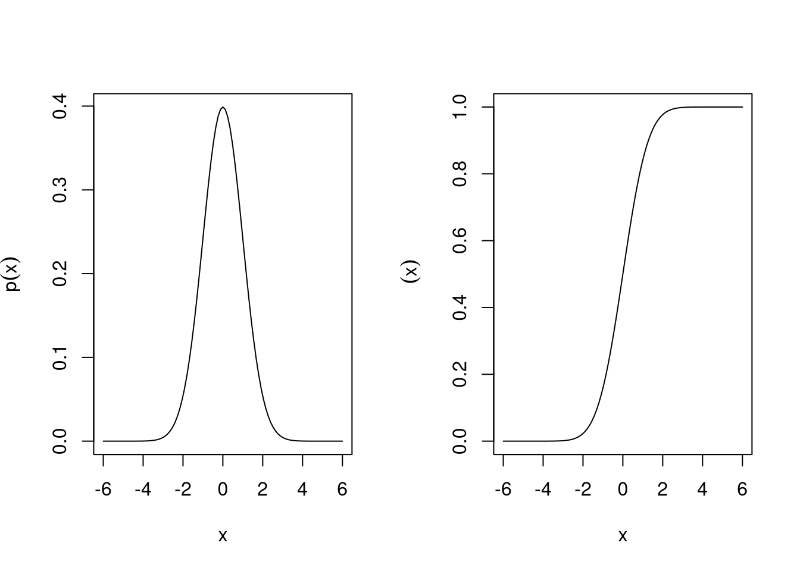
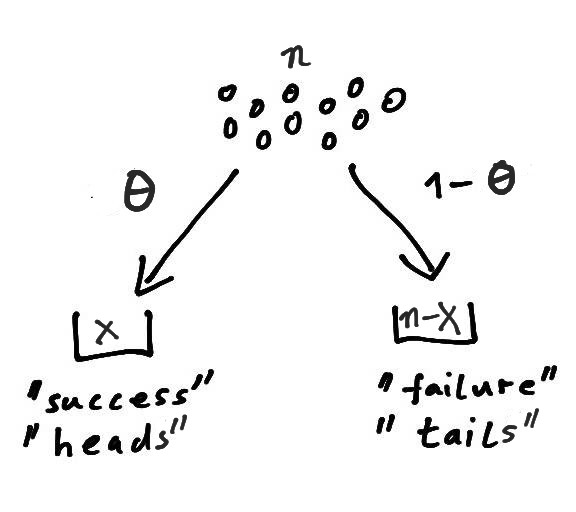
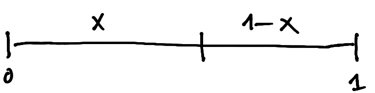
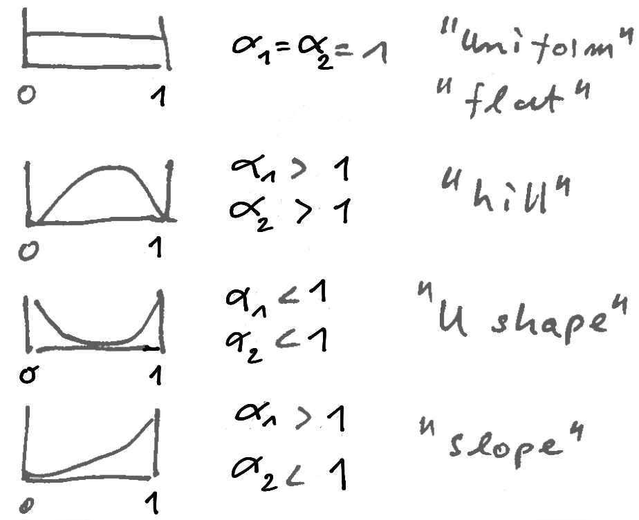
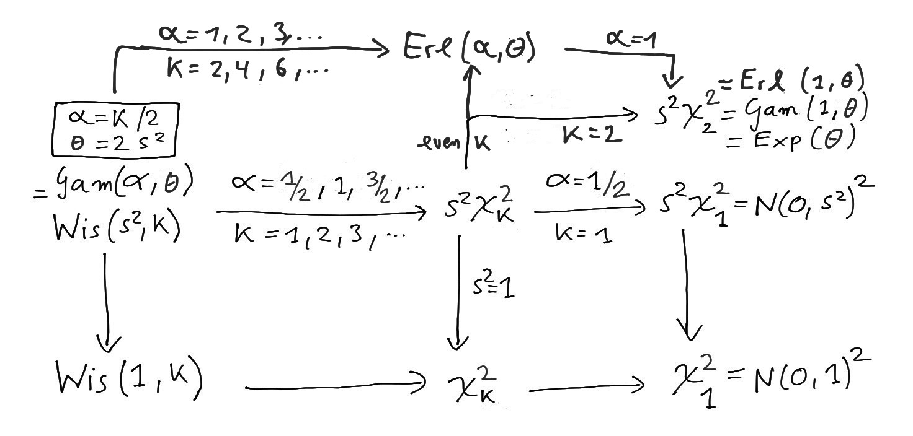
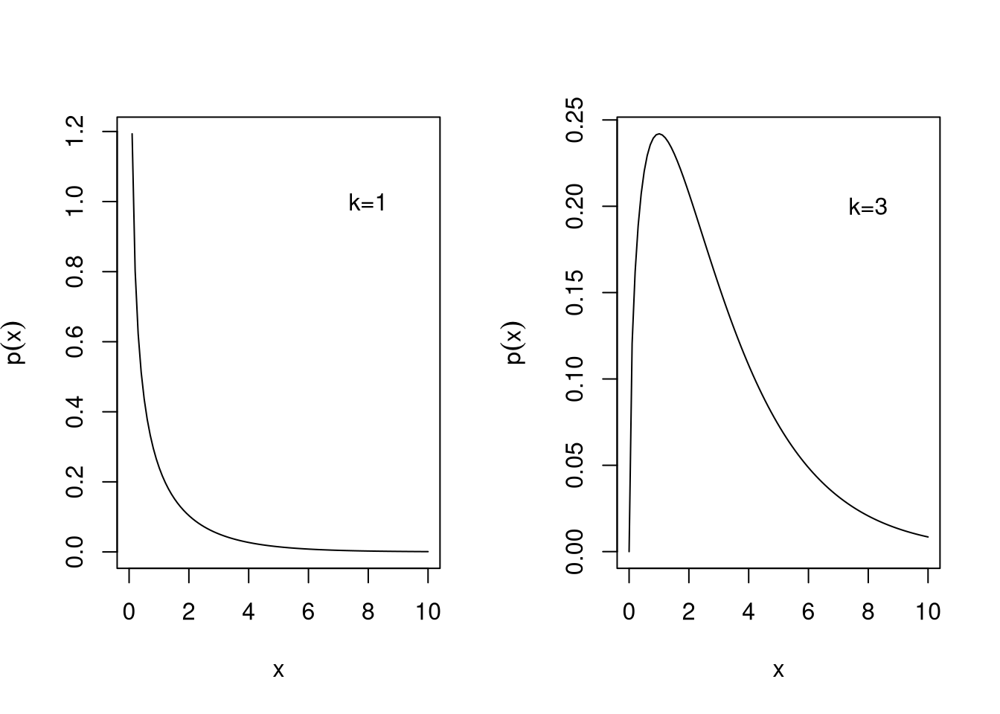
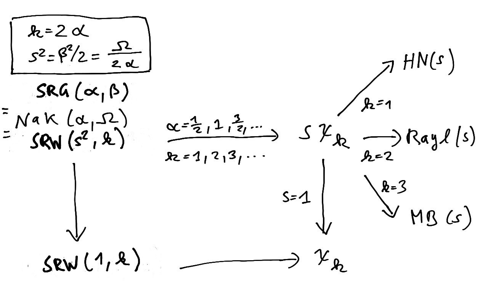
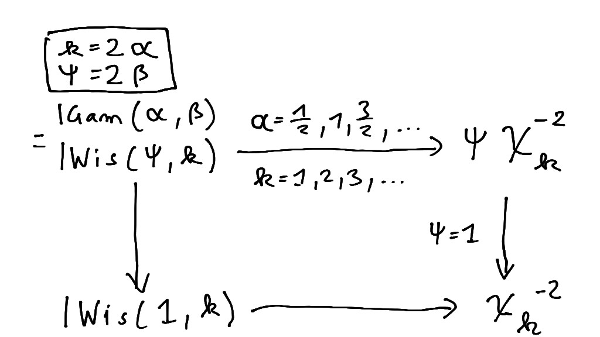
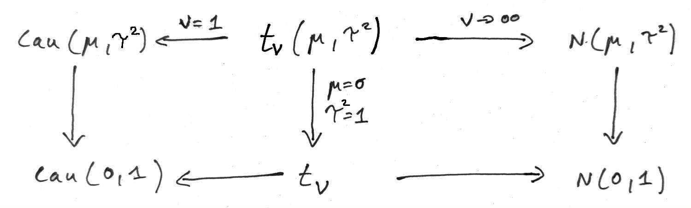

5 Univariate distributions
5.1 Poisson distribution
The Poisson distribution \(\operatorname{Pois}(\mu)\) is a discrete distribution named after Siméon Denis Poisson (1781-1840).
Standard parametrisation
A Poisson-distributed random variable is denoted by \[ x \sim \operatorname{Pois}(\mu) \] with \(\mu \geq 0\) and support \(x \in \{0, 1, \ldots\}\).
The expected value is \[ \operatorname{E}(x) = \mu \] and the variance is \[ \operatorname{Var}(x) = \mu \]
The corresponding pmf is \[ p(x | \mu) = \frac{\mu^x e^{-\mu} }{x!} \]
TipR code
The pmf of the Poisson distribution is given by dpois(), the distribution function is ppois() and the quantile function is qpois(). The corresponding random number generator is rpois(). In the above functions, set lambda=\(\mu\).
NoteExponential family form
\(\operatorname{Pois}(\mu)\) is a one-dimensional exponential family (Chapter 7) that can be written as follows:
- base function: \(h(x) = 1/x!\)
- canonical statistic: \(t(x) = x\)
- canonical parameter: \(\eta = \log \mu\)
- expectation parameter: \(\mu_t = \mu\)
- partition function: \(z(\eta) = \exp( \exp \eta) = \exp \mu\)
- log-partition function: \(a(\eta) = \log z(\eta) = \exp \eta\)
Derivation as rare event limit of the binomial distribution
The Poisson distribution \(\operatorname{Pois}(\mu)\) is a limiting case of the binomial distribution \(\operatorname{Bin}(n, \theta)\) (Section 5.2) when the number of trials \(n\) is large and and the success probability \(\theta\) is small, with \(n\to \infty\) and \(\theta \to 0\) with fixed mean \(\mu = n \theta\).
In mean parametrisation the pmf of the binomial distribution \(\operatorname{Bin}\left(n, \theta= \frac{\mu}{n}\right)\) is \[ \begin{split} p(x | n, \mu ) &= \frac {n!}{x! \, (n -x)!}\, \left( \frac{\mu}{n} \right)^x \left(1 - \frac{\mu}{n} \right)^{n - x}\\ &= \frac{\mu^x}{x!} \left(1 - \frac{\mu}{n} \right)^{n} \, \prod_{i=1}^x \frac{n-i+1}{n-\mu} \end{split}\] For \(n\rightarrow \infty\) with fixed \(\mu\), the second factor converges to \(e^{-\mu}\) and the last product term to 1 so that \[ p(x | n, \mu ) \to \frac{\mu^x e^{-\mu} }{x!} \] which is the pmf of \(\operatorname{Pois}(\mu)\).
Derivation as rare failure limit of the negative binomial distribution
The Poisson distribution \(\operatorname{Pois}(\mu)\) is a limiting case of the negative binomial distribution \(\operatorname{NB}(n, \lambda)\) (Section 5.3) for large number of successes \(n\to \infty\) and fixed mean \(\mu = \frac{n \lambda}{1-\lambda}\), and hence \(\lambda \to 0\) (i.e. rare failures).
In mean parametrisation the pmf of the negative binomial distribution \(\operatorname{NB}\left(n, \lambda= \frac{\mu}{n+\mu}\right)\) is \[ \begin{split} p(x | n, \mu ) &=\frac{\Gamma(x+n)}{x! \, \Gamma(n)} \, \left( \frac{n}{n+\mu} \right)^n \left( \frac{\mu}{n+\mu} \right)^x \\ &= \frac{\mu^x}{x!} \left(1 + \frac{\mu}{n} \right)^{-n} \, \frac{\Gamma(x+n)}{\Gamma(n)(n+\mu)^x} \end{split}\] For \(n\rightarrow \infty\) with fixed \(\mu\), the second factor converges to \(e^{-\mu}\) and the last term to 1 (since, for large \(n\), \(\Gamma(x+n) \approx \Gamma(n) n^x\)) so that \[ p(x | n, \mu ) \to \frac{\mu^x e^{-\mu} }{x!} \] which is the pmf of \(\operatorname{Pois}(\mu)\).
Convolution property
The convolution of \(n\) Poisson distributions, each with a possibly different mean parameter \(\mu_i\), yields another Poisson distribution: \[ \sum_{i=1}^n \operatorname{Pois}(\mu_i) \sim \operatorname{Pois}\left(\sum_{i=1}^n \mu_i\right) \]
Since \(n\) can be an arbitrary positive integer the Poisson distribution is infinitely divisible.
Normal approximation
Following the central limit theorem (Section 3.3), for large \(\mu\) the Poisson distribution \(\operatorname{Pois}(\mu)\) can be well approximated by a normal distribution (Section 5.5) with the same mean and variance.
5.2 Binomial distribution
The binomial distribution \(\operatorname{Bin}(n, \theta)\) is a discrete distribution counting the number of successful outcomes out of \(n\) trials.
The Bernoulli distribution \(\operatorname{Ber}(\theta)\) is a special case of the binomial distribution.
The Poisson distribution \(\operatorname{Pois}(\mu)\) is a limiting case for rare events.
Standard parametrisation
A binomial random variable \(x\) describes the number of successful outcomes in \(n\) identical and independent trials. We write \[ x \sim \operatorname{Bin}(n, \theta)\, \] where \(\theta \in [0,1]\) is the probability of a positive outcome (“success”) in a single trial. Conversely, \(1-\theta \in [0,1]\) is the complementary probability (“failure”). The parameter \(n\) is a nonnegative integer. The support is \(x \in \{ 0, 1, 2, \ldots, n\}\) which notably depends on \(n\) as upper endpoint.

In the binomial model, \(n\) items are independently assigned to two bins (Figure 5.1). The probability of placing an item in the “success” bin is \(\theta\), while the probability of placing it in the “failure” bin is \(1-\theta\).
The binomial distribution is often motivated by a coin tossing experiment where \(\theta\) is the probability of obtaining “heads” and \(1-\theta\) the probability of “tails” when flipping the coin. Here, \(x\) denotes the number of observed “heads” among \(n\) throws.
Another interpretation is as an urn model distribution. Suppose an urn contains two types of balls, say blue representing “success” and yellow for “failure”, present in proportions \(\theta\) and \(1-\theta\), respectively. The binomial distribution models the counts of the number of blue balls (“successes”) when repeatedly drawing from the urn with replacement, until \(n\) balls of any colour are drawn.
The expected value is \[ \operatorname{E}(x) = n \theta = \mu \] with \(\mu \in [0,n]\).
The variance is \[ \operatorname{Var}(x) = n \theta (1 - \theta) = \mu - \frac{\mu^2}{n} \] Hence, for large \(n\to \infty\) the variance approaches the mean.
The corresponding pmf is \[ p(x | n, \theta) = \binom{n}{x}\, \theta^x (1 - \theta)^{n - x} \] The binomial coefficient \[ \binom{n}{x} = \frac {n!}{x! \, (n -x)!} \] in the pmf accounts for the number of possible permutations of \(n\) items of two distinct types (“success” and “failure”). Note that the binomial coefficient does not depend on \(\theta\).
In mean parametrisation, with \(\mu\) as parameter instead of \(\theta\), the binomial distribution is specified as \(\operatorname{Bin}\left(n, \theta= \frac{\mu}{n}\right)\).
TipR code
The pmf of the binomial distribution is given by dbinom(), the distribution function is pbinom() and the quantile function is qbinom(). The corresponding random number generator is rbinom(). In the above functions, set size=\(n\) and prob=\(\theta\) or prob=\(\mu/n\).
NoteExponential family form
With fixed \(n\), \(\operatorname{Bin}(n, \theta)\) is a one-dimensional exponential family (Chapter 7) that can be written as follows:
- base function: \(h(x) = \binom{n}{x}\)
- canonical statistic: \(t(x) = x\)
- canonical parameter: \(\eta = \operatorname{logit}\theta = \log \left( \frac{\theta}{1-\theta} \right)\)
- expectation parameter: \(\mu_t = n \theta\)
- partition function: \(z(\eta) = (1+\exp \eta)^n =(1-\theta)^{-n}\)
- log-partition function: \(a(\eta) = n \log( 1+\exp \eta )\)
Special case: Bernoulli distribution
For \(n=1\) the binomial distribution reduces to the Bernoulli distribution \(\operatorname{Ber}(\theta)\). This is the simplest of all distribution families and is named after Jacob Bernoulli (1655-1705) who also discovered the law of large numbers.
If a random variable \(x\) follows the Bernoulli distribution we write \[ x \sim \operatorname{Ber}(\theta) \] with “success” probability \(\theta \in [0,1]\). Conversely, the complementary “failure” probability is \(1-\theta \in [0,1]\). The support is \(x \in \{0, 1\}\). The variable \(x\) acts as an indicator variable, with “success” indicated by \(x=1\) and “failure” indicated by \(x=0\).
Often the Bernoulli distribution is referred to as “coin flipping” model. Here, \(\theta\) is the probability of “head” and \(1-\theta\) the probability of “tail”. The outcome \(x=1\) corresponds to the “head” and \(x=0\) to “tail”.
The expected value is \[ \operatorname{E}(x) = \theta = \mu \] with \(\mu \in [0,1]\). The variance is \[ \operatorname{Var}(x) = \theta (1 - \theta) = \mu-\mu^2 \]
The pmf of \(\operatorname{Ber}(\theta)\) is \[ p(x | \theta ) = \theta^{x} (1-\theta)^{1-x} = \begin{cases} \theta & \text{if } x = 1 \\ 1-\theta & \text{if } x = 0 \\ \end{cases} \]
Special case: Poisson limit for rare events
For large \(n\to \infty\) and fixed mean \(\mu = n \theta\), and hence success probability \(\theta \to 0\), the binomial distribution \(\operatorname{Bin}(n, \theta)\) converges to the Poisson distribution \(\operatorname{Pois}(\mu)\). This is known as the Poisson limit theorem.
See Section 5.1 for details.
Convolution property
The convolution of \(n\) binomial distributions, each with identical success probability \(\theta\) but possibly different number of trials \(n_i\), yields another binomial distribution with the same parameter \(\theta\): \[ \sum_{i=1}^n \operatorname{Bin}(n_i, \theta) \sim \operatorname{Bin}\left(\sum_{i=1}^n n_i, \theta\right) \]
It follows that the binomial distribution with \(n\) trials is the result of the convolution of \(n\) Bernoulli distributions: \[ \sum_{i=1}^n \operatorname{Ber}(\theta) \sim \operatorname{Bin}(n, \theta) \] Thus, repeating the same Bernoulli trial \(n\) times and counting the total number of successes yields a binomial random variable.
The binomial distribution is not infinitely divisible as it cannot be written as the sum of an arbitrary number of Bernoulli or binomial distributions.
Normal approximation
For large \(n\) and fixed \(\theta\) the binomial distribution \(\operatorname{Bin}(n, \theta)\) can be well approximated by a normal distribution (Section 5.5) with the same mean and variance. This is known as the De Moivre–Laplace theorem, an instance of the central limit theorem (Section 3.3).
Conditioning identity
The binomial distribution \(\operatorname{Bin}(n, \theta)\) for two groups can be obtained from the two-dimensional independent bivariate Poisson distribution \(\operatorname{Pois}(\boldsymbol \mu)\) (Section 6.1) by conditioning on the total number of counts. Specifically, if \[ \boldsymbol x=(x_1, x_2)^T \sim \operatorname{Pois}(\boldsymbol \mu= (n \theta, n (1-\theta))^T ) \] then \[ x_1 | (x_1+x_2=n) \sim \operatorname{Bin}(n, \theta ) \]
See Section 6.2 for more details and the same conditioning identity for the multinomial distibution.
5.3 Negative binomial distribution
The negative binomial distribution \(\operatorname{NB}(n, \lambda)\) is a discrete distribution counting the number of failures until reaching \(n\) successes.
The geometric distribution \(\operatorname{Geom}(\lambda)\) is a special case of the negative binomial distribution.
The Poisson distribution \(\operatorname{Pois}(\mu)\) is a limiting case for rare failures.
The negative binomial distribution can be derived as mixture of Poisson distributions with gamma weights, see Section 5.11.1 for details. It is therefore also known as gamma-Poisson distribution.
Standard parametrisation
A negative binomial random variable \(x\) describes the number of failures before seeing \(n\) successes. We write \[ x \sim \operatorname{NB}(n, \lambda)\, \] where \(\lambda \in [0,1]\) denotes the probability of continuation (“failure”) in each trial. Conversely, \(1-\lambda \in [0,1]\) is the corresponding stopping probability (“success”). The parameter \(n\) is a positive real number. The support is \(x \in \{ 0, 1, 2, \ldots\}\).
This parametrisation mirrors that of the negative multinomial distribution \(\operatorname{NM}(n, \boldsymbol \lambda)\), where the vector \(\boldsymbol \lambda\) specifies the failure or continuation probabilities (see Section 6.3). In a common alternative parametrisation of the negative binomial distribution, the success or stopping probability \(1-\lambda\) is specified instead.
A useful interpretation of the negative binomial distribution is as an urn model. Suppose an urn contains two types of balls, say blue representing “stopping” and yellow for “continuation”, present in proportions \(1-\lambda\) and \(\lambda\), respectively. The negative binomial distribution models the counts the number of yellow balls (“failures”) when repeatedly drawing from the urn with replacement, until \(n\) blue balls (“successes”) are drawn.
The expected value is \[ \operatorname{E}(x) = \frac{n}{1-\lambda} \lambda = \mu \] with \(\mu\geq 0\). For fixed \(n\), a value \(\lambda=0\) corresponds to \(\mu=0\), and \(\lambda \to 1\) corresponds to \(\mu \to \infty\).
The variance is \[ \operatorname{Var}(x) = \frac{n}{(1-\lambda)^2} \lambda = \mu + \frac{\mu^2}{n} \] Relative to the Poisson distribution \(\operatorname{Pois}(\mu)\) (Section 5.1), with \(\operatorname{Var}(x)=\mu\), the negative binomial distribution is overdispersed, with the factor \(1/n\) controlling the degree of overdispersion. For large \(n\) the variance approaches the mean and the overdispersion disappears.
The corresponding pmf is \[ p(x | n, \lambda) = C_{x, n-1} \, (1-\lambda)^n \lambda^x \] where \[ C_{x, n-1} = \frac{\Gamma(x+n)}{x! \, \Gamma(n)} \] is the binomial coefficient adapted to continuous positive \(n\). For integer \(n\) it reduces to the standard binomial coefficient \[ C_{x, n-1} = \binom{x+n-1}{x, n-1} = \frac {(x+n-1)!}{x! \, (n -1)!} \] which gives the number of ways to place \(x\) failures and \(n-1\) successes in the first \(x+n-1\) trials. Note that there are in total \(x+n\) trials, with the last one being a success by construction.
In mean parametrisation, with \(\mu\) as parameter instead of \(\lambda\), the negative binomial distribution is specified as \(\operatorname{NB}\left(n, \lambda= \frac{\mu}{n+\mu}\right)\).
TipR code
The pmf of the negative binomial distribution is given by dnbinom(), the distribution function is pnbinom() and the quantile function is qnbinom(). The corresponding random number generator is rnbinom(). In the above functions, set size=\(n\) and prob=\(1-\lambda\) or mu=\(\mu\).
NoteExponential family form
With fixed \(n\), \(\operatorname{NB}(n, \lambda)\) is a one-dimensional exponential family (Chapter 7) that can be written as follows:
- base function: \(h(x) = C_{x, n-1} = \frac{\Gamma(x+n)}{x! \, \Gamma(n)}\)
- canonical statistic: \(t(x) = x\)
- canonical parameter: \(\eta = \log \lambda\)
- expectation parameter: \(\mu_t = \frac{n}{1-\lambda} \lambda\)
- partition function: \(z(\eta) = (1-\exp \eta)^{-n} =(1-\lambda)^{-n}\)
- log-partition function: \(a(\eta) = -n \log( 1-\exp \eta)\)
Special case: geometric distribution
For \(n=1\) the negative binomial distribution reduces to the geometric distribution \(\operatorname{Geom}(\lambda)\). Hence, the geometric distribution models the number of failures before seeing a success.
If a random variable \(x\) follows the geometric distribution we write \[ x \sim \operatorname{Geom}(\lambda) \] with “failure” probability \(\lambda \in [0,1]\). Conversely, the complementary “success” probability is \(1-\lambda \in [0,1]\). The support is \(x \in \{0, 1, \ldots\}\).
As with the negative binomial distribution, an alternative parametrisation is often used, specifying the success or stopping probability \(1-\lambda\) rather than the failure or continuation probability \(\lambda\).
The expected value is \[ \operatorname{E}(x) = \frac{\lambda}{1-\lambda} = \mu \] with \(\mu\geq 0\) and the variance is \[ \operatorname{Var}(x) = \frac{\lambda}{(1-\lambda)^2} = \mu + \mu^2 \]
The corresponding pmf is \[ p(x | \lambda) = (1-\lambda) \lambda^x \]
In mean parametrisation, with \(\mu\) as parameter instead of \(\lambda\), the geometrix distribution is specified as \(\operatorname{Geom}\left(\lambda= \frac{\mu}{1+\mu}\right)\).
Special case: Poisson limit for rare failures
For large number of successes \(n\to \infty\) and fixed mean \(\mu = \frac{n \lambda}{1-\lambda}\), and hence \(\lambda \to 0\) (i.e. rare failures), the negative binomial distribution \(\operatorname{NB}(n, \lambda)\) converges to the Poisson distribution \(\operatorname{Pois}(\mu)\). This is a variant of the Poisson limit theorem.
See Section 5.1 for details.
Convolution property
The convolution of \(n\) negative binomial distributions, each with identical parameter \(\lambda\) but possibly different number of required successes \(n_i\), yields another negative binomial distribution with the same parameter \(\lambda\): \[ \sum_{i=1}^n \operatorname{NB}(n_i, \lambda) \sim \operatorname{NB}\left(\sum_{i=1}^n n_i, \lambda\right) \]
It follows that the negative binomial distribution with \(n\) required successes is the result of the convolution of \(n\) geometric distributions: \[ \sum_{i=1}^n \operatorname{Geom}(\lambda) \sim \operatorname{NB}(n, \lambda) \] Thus, repeating the same geometric trial \(n\) times and counting the total number of successes yields a negative binomial random variable.
The negative binomial distribution (and it special case the geometric distribution) are both infinitely divisible as the parameter \(n\) need not be an integer, so both can be written as the sum of an arbitrary number of negative binomial distributions.
Normal approximation
For large \(n\) and fixed \(\lambda\) the negative binomial distribution \(\operatorname{NB}(n, \lambda)\) can be well approximated by a normal distribution (Section 5.5) with the same mean and variance.
5.4 Beta distribution
The beta distribution \(\operatorname{Beta}(\alpha_1, \alpha_2)\) is a continuous distribution that is useful to model proportions or probabilities for \(K=2\) classes.
It includes the uniform distribution over the unit interval as a special case.
Standard parametrisation
A beta-distributed random variable is denoted by \[ x \sim \operatorname{Beta}(\alpha_1, \alpha_2) \] with shape parameters \(\alpha_1>0\) and \(\alpha_2>0\). The support of \(x\) is the unit interval given by \(x \in [0,1]\). Thus, the beta distribution is defined over a one-dimensional space.

A beta random variable can be visualised as breaking a unit stick of length one into two pieces of length \(x_1=x\) and \(x_2 = 1-x\) (Figure 5.2). Thus, the \(x_i\) may be used to represent proportions or probabilities for \(K=2\) classes summing up to one.
The mean is \[ \operatorname{E}(x) = \operatorname{E}(x_1) = \frac{\alpha_1}{m} = \mu \] with \(\mu \in [0, 1]\) and \(m = \alpha_1 +\alpha_2 > 0\) as concentration parameter. Furthermore, \[ \operatorname{E}(1-x) = \operatorname{E}(x_2) = \frac{\alpha_2}{m} = 1- \mu \]
The variance is \[ \operatorname{Var}(x) = \operatorname{Var}(x_1) = \operatorname{Var}(x_2) = \frac{\alpha_1 \alpha_2}{m^2 (m+1) } = \frac{\mu (1-\mu)}{m+1} \] For fixed mean \(\mu\) and increasing concentration \(m\) the variance decreases and the probability mass becomes more concentrated around the mean.
The pdf of the beta distribution \(\operatorname{Beta}(\alpha_1, \alpha_2)\) is \[ p(x | \alpha_1, \alpha_2) = \frac{1}{B(\alpha_1, \alpha_2)} x^{\alpha_1-1} (1-x)^{\alpha_2-1} \] containing the beta function \(B(\alpha_1, \alpha_1)\) (see Section A.3).

The beta distribution can assume a number of different shapes, depending on the values of \(\alpha_1\) and \(\alpha_2\) (see Figure 5.3).
In mean parametrisation, with \(\mu\) and \(m\) as parameters instead of \(\alpha_1\) and \(\alpha_2\), the beta distribution is specified as \(\operatorname{Beta}(\alpha_1 = m \mu, \alpha_2= m (1-\mu))\).
TipR code
The pdf of the beta distribution is given by dbeta(), the distribution function is pbeta() and the quantile function is qbeta(). The corresponding random number generator is rbeta(). In the above functions, set shape1=\(\alpha_1\) and shape2=\(\alpha_2\) or shape1=\(m \mu\) and shape2=\(m (1-\mu)\).
NoteExponential family form
\(\operatorname{Beta}(\alpha_1, \alpha_2)\) is a two-dimensional exponential family (Chapter 7) that can be written as follows:
- base function: \(h(x) = 1\)
- canonical statistics: \(\boldsymbol t(x) = \begin{pmatrix} \log x \\ \log(1-x) \end{pmatrix}\)
- canonical parameters: \(\boldsymbol \eta= \begin{pmatrix}\alpha_1-1 \\ \alpha_2-1\end{pmatrix}\)
- expectation parameters: \(\boldsymbol \mu_{\boldsymbol t} = \begin{pmatrix} \psi^{(0)}(\alpha_1)-\psi^{(0)}(m) \\ \psi^{(0)}(\alpha_2)-\psi^{(0)}(m)\end{pmatrix}\), where \(\psi^{(0)}(x)\) is the digamma function (see Section A.2)
- partition function: \(z(\boldsymbol \eta) = B(\eta_1+1, \eta_2+1) = B(\alpha_1, \alpha_2)\)
- log-partition function: \(a(\boldsymbol \eta) = \log B(\eta_1+1, \eta_2+1)\)
Special case: symmetric beta distribution
For \(\alpha_1=\alpha_2=\alpha\) the beta distribution becomes the symmetric beta distribution with a single shape parameter \(\alpha>0\). In mean parametrisation the symmetric beta distribution corresponds to \(\mu=1/2\) and \(m=2 \alpha > 0\).
Special case: uniform distribution
For \(\alpha_1=\alpha_2=1\) the beta distribution becomes the uniform distribution over the unit interval with pdf \(p(x)=1\). In mean parametrisation the uniform distribution corresponds to \(\mu=1/2\) and \(m=2\).
5.5 Normal distribution
The normal distribution \(N(\mu, \sigma^2)\) is the most important continuous probability distribution. It is also called Gaussian distribution named after Carl Friedrich Gauss (1777–1855).
Special cases are the standard normal distribution \(N(0, 1)\) and the delta distribution \(\delta(\mu)\).
Standard parametrisation
The univariate normal distribution \(N(\mu, \sigma^2)\) has two parameters \(\mu\) (location) and \(\sigma^2 > 0\) (variance) and support \(x \in \mathbb{R}\).
If a random variable \(x\) is normally distributed we write \[ x \sim N(\mu,\sigma^2) \] with mean \[ \operatorname{E}(x)=\mu \] and variance \[ \operatorname{Var}(x) = \sigma^2 \]
The pdf is given by \[ \begin{split} p(x| \mu, \sigma^2) &=(2\pi\sigma^2)^{-1/2} \exp\left(-\frac{(x-\mu)^2}{2\sigma^2}\right)\\ &=(\sigma^2)^{-1/2} (2\pi)^{-1/2} e^{-\Delta^2/2}\\ \end{split} \] Here \(\Delta^2 = (x-\mu)^2/\sigma^2\) is the squared distance between \(x\) and \(\mu\) weighted by the variance \(\sigma^2\), also known as squared Mahalanobis distance.
The normal distribution is sometimes also used by specifying the precision \(1/\sigma^2\) instead of the variance \(\sigma^2\).
TipR code
The normal pdf is given by dnorm(), the distribution function is pnorm() and the quantile function is qnorm(). The corresponding random number generator is rnorm(). In the above functions, set mean=\(\mu\) and sd=\(\sqrt{\sigma^2}\).
NoteExponential family form
\(N(\mu, \sigma^2)\) is a two-dimensional exponential family (Chapter 7) that can be written as follows:
- base function: \(h(x) = 1\)
- canonical statistics: \(\boldsymbol t(x) = \begin{pmatrix} x \\ x^2\end{pmatrix}\)
- canonical parameters: \(\boldsymbol \eta= \begin{pmatrix} \sigma^{-2} \mu \\ -\frac{1}{2}\sigma^{-2}\end{pmatrix}\)
- expectation parameters: \(\boldsymbol \mu_{\boldsymbol t} = \begin{pmatrix} \mu \\ \sigma^2 + \mu^2 \end{pmatrix}\)
- partition function: \(z(\boldsymbol \eta) = (-\pi \eta_2^{-1})^{1/2} \exp(-\frac{1}{4}\eta_1^2 \eta_2^{-1}) = (2\pi \sigma^2)^{1/2} \exp(\mu^2/(2 \sigma^2))\)
- log-partition function: \(a(\boldsymbol \eta) = \frac{1}{2} \log ( -\pi \eta_2^{-1} ) -\frac{1}{4}\eta_1^2 \eta_2^{-1}\)
Scale parametrisation
Instead of the variance parameter \(\sigma^2\) it is often also convenient to use the standard deviation \(\sigma=\sqrt{\sigma^2} > 0\) as scale parameter. Similarly, instead of the precision \(1/\sigma^2\) one may wish to use the inverse standard deviation \(w = 1/\sigma\).
The scale parametrisation is central for location-scale transformations (see below).
Special case: standard normal distribution
The standard normal distribution \(N(0, 1)\) has mean \(\mu=0\) and variance \(\sigma^2=1\). The corresponding pdf is \[ p(x)=(2\pi)^{-1/2} e^{-x^2/2} \] with the squared Mahalanobis distance reduced to \(\Delta^2=x^2\).
The cumulative distribution function (cdf) of the standard normal \(N(0,1)\) is \[ \Phi (x ) = \int_{-\infty}^{x} p(x') dx' \] There is no analytic expression for \(\Phi(x)\).
The inverse \(\Phi^{-1}(p) = q_p(N(0,1)) = \operatorname{probit}(p)\) is the quantile function of the standard normal distribution, which is also know as probit function.
Figure 5.4 shows the pdf and cdf of the standard normal distribution.
Special case: delta distribution
The delta distribution \(\delta(\mu)\) is obtained as the limit of \(N(\mu, \varepsilon \sigma^2)\) for \(\varepsilon \rightarrow 0\) and where \(\sigma^2\) is a positive number (e.g. \(\sigma^2=1\)). Thus \(\delta(\mu)\) is a continuous distribution representing a point mass at \(\mu\).
The corresponding pdf \(\delta(x| \mu)\) is called the Dirac delta function, even though it is not an ordinary function. It satisfies \(\delta(x | \mu)=0\) for all \(x\neq \mu\) with an infinite spike at \(\mu\) but still integrates to one.
Location-scale transformation
Let the scale parameter \(\sigma > 0\) be the positive square root of the variance \(\sigma^2\). The inverse scale parameter is \(w=1/\sigma\).
If \(x \sim N(\mu, \sigma^2)\) is normal then \(y=w(x-\mu) \sim N(0, 1)\) is standard normal. This location-scale transformation corresponds to centring and standardisation of a normal random variable, reducing it to a standard normal random variable.
Conversely, if \(y \sim N(0, 1)\) is standard normal then \(x = \mu + \sigma y \sim N(\mu, \sigma^2)\) is normal. This location-scale transformation generates the normal distribution from the standard normal distribution.
Convolution property
The convolution of \(n\) independent, but not necessarily identical, normal distributions results in another normal distribution with corresponding mean and variance: \[ \sum_{i=1}^n N(\mu_i, \sigma^2_i) \sim N\left( \sum_{i=1}^n \mu_i, \sum_{i=1}^n \sigma^2_i \right) \] Hence, any normal random variable can be constructed as the sum of \(n\) suitable independent normal random variables.
Since \(n\) can be an arbitrary positive integer the normal distribution is infinitely divisible.
5.6 Gamma distribution

The gamma distribution \(\operatorname{Gam}(\alpha, \theta)\) is a widely used continuous distribution and is also known as univariate Wishart distribution \(\operatorname{Wis}\left(s^2, k \right)\) using a different parametrisation.
It contains as special cases the Erlang distribution \(\operatorname{Erl}(\alpha, \theta)\) and the scaled chi-squared distribution \(s^2 \chi^2_{k}\) (two parameter restrictions) as well as the univariate standard Wishart distribution \(\operatorname{Wis}\left(1, k \right)\), the chi-squared distribution \(\chi^2_{k}\) and the exponential distribution \(\operatorname{Exp}(\theta)\) (one parameter restrictions).
Figure 5.5 illustrates the relationship of the gamma distribution and the univariate Wishart distribution with these related distributions.
Standard parametrisation
The gamma distribution \(\operatorname{Gam}(\alpha, \theta)\) is a continuous distribution with two parameters \(\alpha>0\) (shape) and \(\theta>0\) (scale): \[ x \sim\operatorname{Gam}(\alpha, \theta) \] and support \(x \in \mathbb{R}^{+}\).
The mean of the gamma distribution is \[ \operatorname{E}(x)=\alpha \theta = \mu \] with \(\mu > 0\). The variance is \[ \operatorname{Var}(x) = \alpha \theta^2 = \frac{\mu^2}{\alpha} \]
The gamma distribution is also often used with a rate parameter \(\beta=1/\theta\). Therefore one needs to pay attention which parametrisation is used.
The pdf is \[ p(x| \alpha, \theta)=\frac{1}{\Gamma(\alpha) \theta} (x/\theta)^{\alpha-1} e^{-x/\theta} \] containing the gamma function \(\Gamma(x)\) (see Section A.1). If \(\alpha \geq 1\) then density at \(x=0\) is finite.
In mean parametrisation, with \(\mu\) as parameter instead of \(\theta\), the gamma distribution is specified as \(\operatorname{Gam}\left(\alpha, \theta=\mu/\alpha\right)\).
If the shape parameter of the gamma distribution \(\operatorname{Gam}(\alpha, \theta)\) is restricted to the positive integers \(\alpha \in \{ 1, 2, \ldots \}\) it is called Erlang distribution \(\operatorname{Erl}(\alpha, \theta)\) named after Agner Krarup Erlang (1878–1929).
TipR code
The pdf of the gamma distribution is available in the function dgamma(), the distribution function is pgamma() and the quantile function is qgamma(). The corresponding random number generator is rgamma(). In the above functions, set shape=\(\alpha\) and scale=\(\theta\) or scale=\(\mu/\alpha\).
NoteExponential family form
\(\operatorname{Gam}(\alpha, \theta)\) is a two-dimensional exponential family (Chapter 7) that can be written as follows:
- base function: \(h(x) = 1\)
- canonical statistics: \(\boldsymbol t(x) = \begin{pmatrix} x \\ \log x \end{pmatrix}\)
- canonical parameters: \(\boldsymbol \eta= \begin{pmatrix} -1/\theta \\ \alpha-1 \end{pmatrix}\)
- expectation parameters: \(\boldsymbol \mu_{\boldsymbol t} = \begin{pmatrix} \alpha \theta \\ \psi^{(0)}(\alpha) +\log\theta\end{pmatrix}\), where \(\psi^{(0)}(x)\) is the digamma function (see Section A.2)
- partition function: \(z(\boldsymbol \eta) = (-\eta_1)^{-\eta_2-1} \Gamma(\eta_2+1)= \theta^{\alpha} \Gamma(\alpha)\)
- log-partition function: \(a(\boldsymbol \eta) = -(\eta_2+1) \log(-\eta_1) +\log \Gamma(\eta_2+1)\)
Univariate Wishart distribution and scaled chi-squared distribution
The univariate Wishart distribution \(\operatorname{Wis}\left(s^2, k \right)\) is an alternative parametrisation of the gamma distribution, with parameters \(s^2 =\theta/2 > 0\) (scale) and \(k=2 \alpha > 0\) (shape or concentration) so that \[ x \sim \operatorname{Wis}\left(s^2, k \right) = \operatorname{Gam}\left(\alpha=\frac{k}{2}, \theta=2 s^2\right) \] It is named after John Wishart (1898–1954).
In the above the scale parameter \(s^2\) is a scalar. If instead a matrix-valued scale parameter \(\boldsymbol S\) is used this yields the multivariate Wishart distribution, see Section 6.6.
In the Wishart parametrisation the mean is \[ \operatorname{E}(x) = k s^2 = \mu \] with \(\mu > 0\) and the variance is \[ \operatorname{Var}(x) = 2 k s^4 = \frac{2 \mu^2}{k} \]
The pdf in terms of \(s^2\) and \(k\) is \[ p(x| s^2, k) = \frac{1}{\Gamma(k/2) (2 s^2)^{k/2}} x^{(k-2)/2} e^{-x/(2s^2)} \]
In mean parametrisation, with \(\mu\) as parameter instead of \(s^2\), the Wishart distribution is specified as \(\operatorname{Wis}\left(s^2= \mu/k, k \right)\).
If the shape parameter of the univariate Wishart distribution \(\operatorname{Wis}\left(s^2, k \right)\) is restricted to the positive integers \(k \in \{ 1, 2, \ldots \}\) it is called scaled chi-squared distribution \[ s^2 \chi^2_{k} =\operatorname{Wis}\left(s^2, k \right) \]
This is equivalent to restricting the shape parameter \(\alpha\) of the gamma distribution \(\operatorname{Gam}(\alpha, \theta=2 s^2)\) to \(\alpha \in \{1/2, 1, 3/2, 2, \ldots\}\).
In mean parametrisation, the scaled chi-squared distribution is specified as \(\frac{\mu}{k} \chi^2_{k}\).
For even \(k \in \{2, 4, \ldots\}\) the scaled chi-squared distribution \(s^2 \chi^2_{k}\) corresponds to the Erlang distribution \(\operatorname{Erl}(\alpha=k/2, \theta=2 s^2)\).
TipR code
The pdf of the univariate Wishart distribution is available via the function dgamma(), the distribution function via pgamma() and the quantile function via qgamma(). The corresponding random number generator is available via rgamma(). In the above functions, set shape=\(k/2\) and scale=\(2 s^2\) or scale=\(2\mu/k\).
NoteExponential family form
\(\operatorname{Wis}\left(s^2, k \right)\) is a two-dimensional exponential family (Chapter 7) that can be written as follows:
- base function: \(h(x) = 1\)
- canonical statistics: \(\boldsymbol t(x) = \begin{pmatrix} x \\ \log x \end{pmatrix}\)
- canonical parameters: \(\boldsymbol \eta= \begin{pmatrix} -s^{-2}/2 \\ (k-2)/2 \end{pmatrix}\)
- expectation parameters: \(\boldsymbol \mu_{\boldsymbol t} = \begin{pmatrix} k s^2 \\ \psi^{(0)}(k/2) +\log(2 s^2)\end{pmatrix}\), where \(\psi^{(0)}\) is the digamma function (see Section A.2)
- partition function: \(z(\boldsymbol \eta) = (-\eta_1)^{-\eta_2-1} \Gamma(\eta_2+1)= (2 s^2)^{k/2} \Gamma(k/2)\)
- log-partition function: \(a(\boldsymbol \eta) = -(\eta_2+1) \log(-\eta_1) +\log \Gamma(\eta_2+1)\)
Special case: univariate standard Wishart distribution and chi-squared distribution
For \(s^2=1\) or \(\mu=k\) the univariate Wishart distribution reduces to the univariate standard Wishart distribution \[ x \sim \operatorname{Wis}\left(1, k \right) = \operatorname{Gam}\left(\alpha=\frac{k}{2}, \theta=2\right) \] with mean \[ \operatorname{E}(x) = k = \mu \] with \(\mu>0\) and variance \[ \operatorname{Var}(x) = 2 k = 2 \mu \]
The pdf is \[ p(x| k)=\frac{1}{\Gamma(k/2) 2^{k/2} } x^{(k-2)/2} e^{-x/2} \]
In mean parametrisation, with \(\mu\) as parameter instead of \(k\), the univariate standard Wishart distribution is specified as \(\operatorname{Wis}\left(s^2= 1, k=\mu \right)\).
If \(k \in \{ 1, 2, \ldots \}\) is restricted to the positive integers the univariate standard Wishart distribution is called chi-squared distribution \[ \chi^2_{k}=\operatorname{Wis}\left(s^2=1, k \right) \]
In mean parametrisation, the chi-squared distribution is specified as \(\chi^2_{\mu}\), with \(\mu\) restricted to positive integers.

Figure 5.6 shows the pdf of the chi-squared distribution for degrees of freedom \(k=1\) and \(k=3\).
TipR code
The pdf of the chi-squared distribution is given by dchisq(). The distribution function is pchisq() and the quantile function is qchisq(). The corresponding random number generator is rchisq(). In the above functions, set df=\(k\) or df=\(\mu\).
The implementation in R also allow non-integer values of \(k\), thus the above functions also model the univariate standard Wishart distribution.
NoteExponential family form
\(\operatorname{Wis}\left(s^2=1, k \right)\) is a one-dimensional exponential family (Chapter 7) that can be written as follows:
- base function: \(h(x) = e^{-x/2}\)
- canonical statistic: \(t(x) = \log x\)
- canonical parameter: \(\eta = (k-2)/2\)
- expectation parameter: \(\mu_{t} = \psi^{(0)}(k/2) +\log 2\), where \(\psi^{(0)}\) is the digamma function (see Section A.2)
- partition function: \(z(\eta) = 2^{\eta+1} \Gamma(\eta+1)= 2^{k/2} \Gamma(k/2)\)
- log-partition function: \(a(\eta) = (\eta+1) \log 2 + \log \Gamma(\eta+1)\)
Special case: exponential distribution
If the shape parameter \(\alpha\) of the gamma distribution \(\operatorname{Gam}(\alpha, \theta)\) is set to \(\alpha=1\), or if the shape parameter \(k\) of the Wishart distribution \(\operatorname{Wis}(s^2, k)\) is set to \(k=2\), we obtain the exponential distribution \[ x \sim \operatorname{Exp}(\theta) = \operatorname{Gam}(\alpha=1, \theta) = \operatorname{Wis}(s^2=\theta/2, k=2) \] with scale parameter \(\theta\).
It has mean \[ \operatorname{E}(x)=\theta = \mu \] and variance \[ \operatorname{Var}(x) = \theta^2 = \mu^2 \] and the pdf is \[ p(x| \theta)=\theta^{-1} e^{-x/\theta} \]
Just like the gamma distribution the exponential distribution is also often specified using a rate parameter \(\beta= 1/\theta\) instead of a scale parameter \(\theta\).
TipR code
The command dexp() returns the pdf of the exponential distribution, pexp() is the distribution function and qexp() is the quantile function. The corresponding random number generator is rexp(). In the above functions, set rate=\(\beta = 1/\theta\).
NoteExponential family form
\(\operatorname{Exp}(\theta)\) is a one-dimensional exponential family (Chapter 7) that can be written as follows:
- base function: \(h(x) = 1\)
- canonical statistic: \(t(x) = x\)
- canonical parameter: \(\eta = -1/\theta\)
- expectation parameter: \(\mu_{t} = \theta\)
- partition function: \(z(\eta) = -\eta^{-1} = \theta\)
- log-partition function: \(a(\eta) = -\log(-\eta)\)
Scale transformation
If \(x \sim \operatorname{Gam}(\alpha, \theta)\) then the scaled random variable \(b x\) with \(b>0\) is also gamma distributed with \(b x \sim \operatorname{Gam}(\alpha, b \theta)\). Equivalently, if \(x \sim \operatorname{Wis}(s^2, k)\) then the scaled random variable \(b x\) is also Wishart distributed with \(b x \sim \operatorname{Wis}(b s^2, k)\).
Hence,
- \(\theta \, \operatorname{Gam}(\alpha, 1) = \operatorname{Gam}(\alpha, \theta)\),
- \(\theta \, \operatorname{Exp}(1) = \operatorname{Exp}(\theta)\),
- \((\mu / k) \, \operatorname{Wis}(1, k) = \operatorname{Wis}(s^2= \mu/k, k)\) and
- \(s^2 \, \operatorname{Wis}(1, k) = \operatorname{Wis}(s^2, k)\).
As \(\chi^2_{k}\) equals \(\operatorname{Wis}(1, k)\) the last example demonstrates that the scaled chi-squared distribution \(s^2 \chi^2_{k}\) equals the univariate Wishart distribution \(\operatorname{Wis}(s^2, k)\).
Convolution property
The convolution of \(n\) gamma distributions with the same scale parameter \(\theta\) but possible different shape parameters \(\alpha_i\) yields another gamma distribution: \[ \sum_{i=1}^n \operatorname{Gam}(\alpha_i, \theta) \sim \operatorname{Gam}\left( \sum_{i=1}^n \alpha_i, \theta \right) \] Thus, any gamma random variable can be obtained as the sum of \(n\) suitable independent gamma random variables.
In Wishart parametrisation this becomes \[ \sum_{i=1}^n \operatorname{Wis}(s^2, k_i) \sim \operatorname{Wis}\left(s^2, \sum_{i=1}^n k_i\right) \]
Since \(n\) can be an arbitrary positive integer, the gamma resp. univariate Wishart distribution is infinitely divisible.
The above includes the following specific constructions:
The Erlang distribution (gamma distribution with integer \(\alpha\)) \[ \sum_{i=1}^{\alpha} \operatorname{Exp}(\theta) \sim \operatorname{Erl}(\alpha, \theta) \]
The scaled chi-squared distribution \[ \sum_{i=1}^k s^2 \chi^2_{1} \sim s^2 \chi^2_{k} \]
The univariate Wishart distribution \(\operatorname{Wis}(s^2, k)\) for integer-valued \(k\): \[ \sum_{i=1}^k \operatorname{Wis}(s^2, 1) \sim \operatorname{Wis}\left(s^2, k\right) \]
Link to normal distribution
The unvariate Wishart distribution or scaled chi-squared distribution is closely related to the normal distribution with mean zero. Specifically, if \(\boldsymbol z\sim N(0, s^2)\) then \(z^2 \sim \operatorname{Wis}(s^2, 1) = s^2 \chi^2_{1}\). Thus, if \(z_1, \ldots, z_k\sim N(0,s^2)\) are \(k\) independent samples then \(\sum_{i=1}^k z_i^2 \sim \operatorname{Wis}(s^2, k) = s^2 \chi^2_{k}\).
Similarly, the univariate standard Wishart distribution or chi-squared distribution is closely related to the standard normal distribution. Specifically, if \(z \sim N(0, 1)\) then \(z^2 \sim \operatorname{Wis}(1, 1)= \chi^2_{1}\). Thus, if \(z_1, \ldots, z_k\sim N(0,1)\) are \(k\) independent samples then \(\sum_{i=1}^k z_i^2 \sim \operatorname{Wis}(1, k) = \chi^2_{k}\).
Normal approximation
Following the central limit theorem (Section 3.3), for large shape parameter \(\alpha\) the gamma distribution distribution \(\operatorname{Gam}(\alpha, \theta)\) can be well approximated by a normal distribution (Section 5.5) with the same mean and variance. Similarly, for large shape or concentration parameter \(k\) the univariate Wishart distribution \(\operatorname{Wis}(s^2, k)\) is can be well approximated by a normal distribution with the same mean and variance.
5.7 Square-root gamma distribution

The square-root gamma distribution \(\operatorname{SRG}(\alpha, \beta)\) is a continuous distribution. It is also known, using different parametrisations, as the Nakagami distribution \(\operatorname{Nak}(\alpha, \Omega)\) or as the univariate square-root Wishart distribution \(\operatorname{SRW}(s^2, k)\).
It is linked to the gamma distribution \(\operatorname{Gam}(\alpha, \theta)\) aka univariate Wishart distribution \(\operatorname{Wis}\left(s^2, k \right)\) (Section 5.6) by a square-root transformation.
Special cases include the scaled chi distribution \(\psi \,\chi_k\) (two parameter restriction), the half-normal distribution \(\operatorname{HN}(s)\), the Rayleigh distribution \(\operatorname{Rayl}(s)\), the Maxwell-Boltzmann distribution \(\operatorname{MB}(s)\), the univariate standard square-root Wishart distribution \(\operatorname{SRW}(1, k)\) and the chi distribution \(\chi_k\) (one parameter restrictions).
Figure 5.7 illustrates the relationship of the square-root gamma distribution, the Nakagami distribution and the univariate square-root Wishart distribution with these related distributions.
Standard parametrisation
A random variable \(x\) following a square-root gamma distribution is denoted by \[ x \sim \operatorname{SRG}(\alpha, \beta) \] with two parameters \(\alpha >0\) (shape parameter) and \(\beta >0\) (scale parameter) and support \(x \in \mathbb{R}^{+}\).
The mean of the square-root gamma distribution is \[ \operatorname{E}(x) = \frac{\Gamma(\alpha+1/2)}{\Gamma(\alpha)} \beta \] containing the gamma function \(\Gamma(x)\) (see Section A.1).
The second moment is \[ \operatorname{E}(x^2) = \alpha \beta^2 \] and hence the variance is \[ \operatorname{Var}(x) = \operatorname{E}(x^2) - \operatorname{E}(x)^2 = \left( \alpha - \left( \frac{\Gamma(\alpha+1/2)}{\Gamma(\alpha)}\right)^2 \right) \beta^2 \]
The square-root gamma distribution \(\operatorname{SRG}(\alpha, \beta)\) has pdf \[ p(x| \alpha, \beta)= \frac{ 2 }{\Gamma(\alpha) \beta } (x/\beta)^{2\alpha-1} e^{- (x/\beta)^2} \] If \(\alpha \geq 1/2\) the density at \(x=0\) is finite.
TipR code
As the square-root gamma distribution is linked to the gamma distribution, the native R functions for the gamma distribution can be used as follows: pdf 2*x*dgamma(x^2), cdf pgamma(q^2), quantiles sqrt(qgamma(p)) and random numbers sqrt(rgamma()), with shape=\(\alpha\) and scale=\(\beta^2\).
NoteExponential family form
\(\operatorname{SRG}(\alpha, \beta)\) is a two-parameter exponential family (Chapter 7) that can be written as follows:
- base function: \(h(x) = 1\)
- canonical statistics: \(\boldsymbol t(x) = \begin{pmatrix} x^2 \\ \log x \end{pmatrix}\)
- canonical parameters: \(\boldsymbol \eta= \begin{pmatrix} -1/\beta^2 \\ 2\alpha -1 \end{pmatrix}\)
- expectation parameters: \(\boldsymbol \mu_t = \begin{pmatrix} \alpha \beta^2 \\ \frac{1}{2} \psi^{(0)}(\alpha) + \log \beta \end{pmatrix}\), where \(\psi^{(0)}(x)\) is the digamma function (see Section A.2)
- partition function: \(z(\boldsymbol \eta) = \frac{1}{2} (-\eta_1)^{-(\eta_2+1)/2} \Gamma\left( \frac{\eta_2+1}{2} \right) = \frac{1}{2} \beta^{2\alpha}\, \Gamma(\alpha)\)
- log-partition function: \(a(\boldsymbol \eta) = -\log 2 -\frac{\eta_2+1}{2} \log (-\eta_1) + \log \Gamma\left( \frac{\eta_2+1}{2} \right)\)
Relation to the gamma distribution
The square-root gamma distribution is closely linked to the gamma distribution. Assume that the random variable \(y\) follows a gamma distribution with \[ y \sim \operatorname{Gam}(\alpha, \theta) \] then the square-root transformed variable \(x = \sqrt{y}\) follows a square-root gamma distribution with \[ x = \sqrt{y} \sim \operatorname{SRG}(\alpha, \beta = \sqrt{\theta}) \] where \(\alpha\) is the shape parameter and \(\theta\) the scale parameter of the gamma distribution and \(\beta\) is the scale parameter of the square-root gamma distribution.
Correspondingly, the density \(p_x(x| \alpha, \beta )\) of the square-root gamma distribution is obtained from the density \(p_y(y |\alpha, \theta )\) of the gamma distribution via \[ p_x(x| \alpha, \beta) = 2 x \, p_y\left(\left. x^2 \right| \alpha, \theta=\beta^2 \right) \]
Nakagami distribution
The Nakagami distribution \(\operatorname{Nak}(\alpha, \Omega)\) is a closely related parametrisation of the square-root gamma distribution, with \(\Omega = \alpha \beta^2 > 0\) as squared scale parameter along with the shape parameter \(\alpha > 0\) so that \[ x \sim \operatorname{Nak}(\alpha, \Omega) = \operatorname{SRG}\left(\alpha, \beta=\sqrt{\frac{\Omega}{\alpha}} \right) \] with support \(x \in \mathbb{R}^{+}\).
The mean of the Nakagami distribution is \[ \operatorname{E}(x) = \frac{\Gamma(\alpha+1/2)}{\Gamma(\alpha) \alpha^{1/2} } \Omega^{1/2} \]
The second moment is \[ \operatorname{E}(x^2) = \Omega \] and hence the variance is \[ \operatorname{Var}(x) = \operatorname{E}(x^2) - \operatorname{E}(x)^2 = \left(1- \frac{1}{\alpha} \left( \frac{\Gamma(\alpha+1/2)}{\Gamma(\alpha)}\right)^2 \right) \Omega \]
The pdf is \[ p(x| \alpha, \Omega )= \frac{ 2 }{\Gamma(\alpha) } \left(\frac{\alpha}{\Omega}\right)^\alpha x^{2\alpha-1} e^{- x^2 \alpha/\Omega} \] If \(\alpha \geq 1/2\) then density at \(x=0\) is finite.
TipR code
The nakagami package implements the Nakagami distribution. The function nakagami::dnaka() provides the pdf, nakagami::dpnaka the distribution function and nakagami::qnaka() is the quantile function. The corresponding random number generator is nakagami::rnaka(). In the above functions, set shape=\(\alpha\) and scale=\(\Omega\).
NoteExponential family form
\(\operatorname{Nak}(\alpha, \Omega)\) is a two-parameter exponential family (Chapter 7) that can be written as follows:
- base function: \(h(x) = 1\)
- canonical statistics: \(\boldsymbol t(x) = \begin{pmatrix} x^2 \\ \log x \end{pmatrix}\)
- canonical parameters: \(\boldsymbol \eta= \begin{pmatrix} -\alpha/\Omega \\ 2\alpha -1 \end{pmatrix}\)
- expectation parameters: \(\boldsymbol \mu_t = \begin{pmatrix} \Omega \\ \frac{1}{2} \left(\psi^{(0)}(\alpha) +\log\left( \frac{\Omega}{\alpha}\right) \right)\end{pmatrix}\), where \(\psi^{(0)}(x)\) is the digamma function (see Section A.2)
- partition function: \(z(\boldsymbol \eta) = \frac{1}{2} (-\eta_1)^{-(\eta_2+1)/2} \Gamma\left( \frac{\eta_2+1}{2} \right) = \frac{1}{2} (\Omega/\alpha)^{\alpha}\, \Gamma(\alpha)\)
- log-partition function: \(a(\boldsymbol \eta) = -\log 2 -\frac{\eta_2+1}{2} \log (-\eta_1) + \log \Gamma\left( \frac{\eta_2+1}{2} \right)\)
Univariate square-root Wishart distribution and scaled chi distribution
The univariate square-root Wishart distribution is an alternative parametrisation of the square-root gamma distribution or the Nakagami distribution, using \(k = 2 \alpha\) (shape or concentration) and \(s^2 = \frac{\beta^2}{2} = \frac{\Omega}{2\alpha}\) (squared scale) as parameters so that \[ \begin{split} x \sim \operatorname{SRW}(s^2, k) &= \operatorname{SRG}\left(\alpha=\frac{k}{2}, \beta= \sqrt{ 2 s^2}\right)\\ &=\operatorname{Nak}\left(\alpha = \frac{k}{2}, \Omega = k s^2\right)\\ \end{split} \]
The mean of the univariate square-root Wishart distribution is \[ \operatorname{E}(x) = \sqrt{ 2 } \left(\frac{ \Gamma((k+1)/2)}{\Gamma(k/2)} \right) s \]
The second moment is \[ \operatorname{E}(x^2) = k s^2 \] and hence the variance is \[ \operatorname{Var}(x) = \operatorname{E}(x^2) - \operatorname{E}(x)^2 = \left( k - 2 \left( \frac{\Gamma((k+1)/2)}{\Gamma(k/2)}\right)^2 \right) s^2 \]
The pdf is \[ p(x| s^2, k)= \frac{ 2 }{\Gamma(k/2) (2 s^2)^{k/2} } x^{k-1} e^{- x^2/(2s^2)} \]
If the shape parameter of the univariate square-root Wishart distribution is restricted to the positive integers \(k \in \{ 1, 2, \ldots \}\) it is called scaled chi distribution \[ s \chi_{k} = \operatorname{SRW}\left(s^2, k \right) \] where \(k\) is the degree of freedom and \(s = \sqrt{s^2}\) is the scale parameter.
This is equivalent to restricting the shape parameter \(\alpha\) of the square-root gamma distribution \(\operatorname{SRG}(\alpha, \beta=\sqrt{2 s^2})\) to \(\alpha \in \{1/2, 1, 3/2, 2, \ldots\}\).
TipR code
As the univariate square-root Wishart distribution and scaled chi distribution are linked to the gamma distribution, the native R functions for the gamma distribution can be used as follows: pdf 2*x*dgamma(x^2), cdf pgamma(q^2), quantiles sqrt(qgamma(p)) and random numbers sqrt(rgamma()), with parameters in these functions set to shape=\(k/2\) and scale=\(2 s^2\).
NoteExponential family form
\(\operatorname{SRW}\left(s^2, k \right)\) is a two-parameter exponential family (Chapter 7) that can be written as follows:
- base function: \(h(x) = 1\)
- canonical statistics: \(\boldsymbol t(x) = \begin{pmatrix} x^2 \\ \log x \end{pmatrix}\)
- canonical parameters: \(\boldsymbol \eta= \begin{pmatrix} -s^{-2}/2 \\ k -1 \end{pmatrix}\)
- expectation parameters: \(\boldsymbol \mu_t = \begin{pmatrix} k s^2 \\\frac{1}{2} (\psi^{(0)}(\frac{k}{2}) +\log (2 s^2)) \end{pmatrix}\), where \(\psi^{(0)}(x)\) is the digamma function (see Section A.2)
- partition function: \(z(\boldsymbol \eta) = \frac{1}{2} (-\eta_1)^{-(\eta_2+1)/2} \Gamma\left( \frac{\eta_2+1}{2} \right) = \frac{1}{2} (2 s^2)^{k/2}\, \Gamma(k/2)\)
- log-partition function: \(a(\boldsymbol \eta) = -\log 2 -\frac{\eta_2+1}{2} \log (-\eta_1) + \log \Gamma\left( \frac{\eta_2+1}{2} \right)\)
Relation to the univariate Wishart distribution and the scaled chi-squared distribution
The univariate square-root Wishart distribution is closely linked to the univariate Wishart distribution. Assume that the random variable \(y\) follows a univariate Wishart distribution with \[ y \sim \operatorname{Wis}(s^2, k) \] then the square-root transformed variable \(x = \sqrt{y}\) follows a univariate square-root Wishart distribution \[ x = \sqrt{y} \sim \operatorname{SRW}(s^2, k) \] where \(k\) is the shape parameter and \(s^2\) is the scale parameter of the Wishart distribution and the squared scale parameter of the square-root Wishart distribution.
Likewise, if the random variable \(y\) follows a scaled chi-squared distribution \[ y \sim s^2 \, \chi^2_{k} \] then the square-root transformed variable \(x = \sqrt{y}\) follows follows a scaled chi- distribution \[ x = \sqrt{y} \sim s\, \chi_{k} \]
Correspondingly, the density \(p_x(x| s^2, k)\) of the univariate square-root Wishart distribution (scaled chi-distribution) is obtained from the density \(p_y(y| s^2, k)\) of the univariate Wishart distribution (scaled chi-squared distribution) via \[ p_x(x|s^2, k) = 2x \, p_y\left(\left. x^2 \right| s^2, k \right) \]
Special case: half-normal distribution
The half-normal distribution \(\operatorname{HN}(s)\) is a scaled chi distribution with degree of freedom \(k=1\). Hence, \[ \begin{split} \operatorname{HN}(s) &= s \, \chi_{1}\\ &= \operatorname{SRW}(s^2, 1) \\ &= \operatorname{SRG}\left(\frac{1}{2}, \sqrt{2 s^2}\right)\\ &= \operatorname{Nak}\left(\frac{1}{2}, s^2\right)\\ \end{split} \]
The mean is \[ \operatorname{E}(x) = \sqrt{ \frac{ 2 }{\pi} } s \]
The second moment is \[ \operatorname{E}(x^2) = s^2 \] and the variance is \[ \operatorname{Var}(x) = \operatorname{E}(x^2) - \operatorname{E}(x)^2 = \left( 1 - \frac{2}{\pi} \right) s^2 \]
The pdf is \[ p(x| s)= \sqrt{ \frac{ 2 }{\pi } } \frac{1}{s} e^{- x^2/(2s^2)} \]
TipR code
The extraDistr package implements the half-normal distribution. The function extraDistr::dhnorm() provides the pdf, extraDistr::phnorm() the distribution function and extraDistr::qhnorm() is the quantile function. The corresponding random number generator is extraDistr::rhnorm(). In the above functions, set sigma=\(s\).
Alternatively, use the native R functions for the gamma distribution as follows: pdf 2*x*dgamma(x^2), cdf pgamma(q^2), quantiles sqrt(qgamma(p)) and random numbers sqrt(rgamma()), with parameters in these functions set to shape=\(1/2\) and scale=\(2 s^2\).
Special case: Rayleigh distribution
The Rayleigh distribution \(\operatorname{Rayl}(s)\) is a scaled chi distribution with degree of freedom \(k=2\). Hence, \[ \begin{split} \operatorname{Rayl}(s) &= s \, \chi_{2}\\ &= \operatorname{SRW}(s^2, 2) \\ &= \operatorname{SRG}\left(1, \sqrt{2 s^2}\right)\\ &= \operatorname{Nak}\left(1, 2 s^2\right)\\ \end{split} \]
The mean is \[ \operatorname{E}(x) = \sqrt{ \frac{\pi}{2} } s \]
The second moment is \[ \operatorname{E}(x^2) = 2 s^2 \] and the variance is \[ \operatorname{Var}(x) = \operatorname{E}(x^2) - \operatorname{E}(x)^2 = \frac{ 4 - \pi}{2} s^2 \]
The pdf is \[ p(x| s)= \frac{x}{s^2} e^{- x^2/(2s^2)} \]
TipR code
The extraDistr package implements the Rayleigh distribution. The function extraDistr::drayleigh() provides the pdf, extraDistr::prayleigh() the distribution function and extraDistr::qrayleigh() is the quantile function. The corresponding random number generator is extraDistr::rrayleigh(). In the above functions, set sigma=\(s\).
Alternatively, use the native R functions for the gamma distribution as follows: pdf 2*x*dgamma(x^2), cdf pgamma(q^2), quantiles sqrt(qgamma(p)) and random numbers sqrt(rgamma()), with parameters in these functions set to shape=\(1\) and scale=\(2 s^2\).
Special case: Maxwell-Boltzmann distribution
The Maxwell-Boltzmann distribution \(\operatorname{MB}(s)\) is a scaled chi distribution with degree of freedom \(k=3\). Hence, \[ \begin{split} \operatorname{MB}(s) &= s \, \chi_{3}\\ &= \operatorname{SRW}(s^2, 3) \\ &= \operatorname{SRG}\left(\frac{3}{2}, \sqrt{2 s^2}\right)\\ &= \operatorname{Nak}\left(\frac{3}{2}, 3 s^2\right)\\ \end{split} \]
The mean is \[ \operatorname{E}(x) = \sqrt{ \frac{ 8 }{\pi} } s \]
The second moment is \[ \operatorname{E}(x^2) = 3 s^2 \] and the variance is \[ \operatorname{Var}(x) = \operatorname{E}(x^2) - \operatorname{E}(x)^2 = \left( 3 - \frac{8}{\pi}\right) s^2 \]
The pdf is \[ p(x| s)= \sqrt{ \frac{2}{\pi} } \frac{ x^2 }{ s^3 } e^{- x^2/(2s^2)} \]
An application of the Maxwell-Boltzmann distribution in physics is as model of the speed of molecules in an ideal gas. Assume that the velocity vector \(\boldsymbol x\) follows a three-dimensional multivariate normal distribution \(N(0, s^2 \boldsymbol I)\) with zero mean and spherical covariance \(s^2 \boldsymbol I\) with \(s = \sqrt{k_B T/m}\), depending on particle mass \(m\), temperature \(T\) and the Boltzmann constant \(k_B = 1.380649 \times 10^{-23} J/K\). The speed \(\sqrt{\boldsymbol x^T\boldsymbol x}\) (the magnitude of the velocity vector) then follows the Maxwell-Boltzmann distribution \(\operatorname{MB}(s)\).
TipR code
As the Maxwell-Boltzmann distribution is linked to the gamma distribution, the native R functions for the gamma distribution can be used as follows: pdf 2*x*dgamma(x^2), cdf pgamma(q^2), quantiles sqrt(qgamma(p)) and random numbers sqrt(rgamma()), with parameters in these functions set to shape=\(3/2\) and scale=\(2 s^2\).
Special case: univariate standard square-root Wishart distribution and chi distribution
For \(s^2=1\) the univariate square-root Wishart distribution reduces to the univariate standard square-root Wishart distribution \[ \begin{split} x \sim \operatorname{SRW}(1, k) &= \operatorname{SRG}\left(\alpha=\frac{k}{2}, \beta= \sqrt{2}\right)\\ &=\operatorname{Nak}\left(\alpha = \frac{k}{2}, \Omega = k\right)\\ \end{split} \]
The mean of the univariate standard square-root Wishart distribution is \[ \operatorname{E}(x) = \sqrt{ 2 } \left(\frac{\Gamma((k+1)/2)}{\Gamma(k/2)} \right) \]
The second moment is \[ \operatorname{E}(x^2) = k \] and hence the variance is \[ \operatorname{Var}(x) = \operatorname{E}(x^2) - \operatorname{E}(x)^2 = k - 2 \left( \frac{\Gamma((k+1)/2)}{\Gamma(k/2)}\right)^2 \]
The pdf is \[ p(x| k)= \frac{ 1 }{\Gamma(k/2) 2^{(k-2)/2} } x^{k-1} e^{- x^2/2} \]
If the shape parameter of the univariate standard square-root Wishart distribution is restricted to the positive integers \(k \in \{ 1, 2, \ldots \}\) it is called chi distribution \[ \chi_{k} = \operatorname{SRW}\left(1, k \right) \] where \(k\) is the degree of freedom.
TipR code
As the univariate standard square-root Wishart distribution and chi distribution are linked to the gamma distribution, the native R functions for the gamma distribution can be used as follows: pdf 2*x*dgamma(x^2), cdf pgamma(q^2), quantiles sqrt(qgamma(p)) and random numbers sqrt(rgamma()), with parameters in these functions set to shape=\(k/2\) and scale=\(2\).
NoteExponential family form
\(\operatorname{SRW}\left(1, k \right)\) is a one-parameter exponential family (Chapter 7) that can be written as follows:
- base function: \(h(x) = e^{-x^2/2}\)
- canonical statistics: \(t(x) = \log x\)
- canonical parameters: \(\eta = k -1\)
- expectation parameters: \(\mu_t = \frac{1}{2} (\psi^{(0)}(\frac{k}{2}) +\log 2)\), where \(\psi^{(0)}(x)\) is the digamma function (see Section A.2)
- partition function: \(z(\eta) = 2^{(\eta-1)/2} \Gamma\left( \frac{\eta+1}{2} \right) = 2^{(k-2)/2}\, \Gamma(k/2)\)
- log-partition function: \(a(\boldsymbol \eta) = \left(\frac{\eta-1}{2} \right) \log 2 + \log \Gamma\left( \frac{\eta+1}{2} \right)\)
Relation to the univariate standard Wishart distribution and the chi-squared distribution
The univariate standard square-root Wishart distribution is closely linked to the univariate standard Wishart distribution. Assume that the random variable \(y\) follows a univariate standard Wishart distribution with \[ y \sim \operatorname{Wis}(1, k) \] then the square-root transformed variable \(x = \sqrt{y}\) follows a univariate standard square-root Wishart distribution \[ x = \sqrt{y} \sim \operatorname{SRW}(1, k) \] where \(k\) is the shape parameter shared by both distributions.
Likewise, if the random variable \(y\) follows a chi-squared distribution \[ y \sim \chi^2_{k} \] then the square-root transformed variable \(x = \sqrt{y}\) follows follows a chi distribution \[ x = \sqrt{y} \sim \chi_{k} \]
Correspondingly, the density \(p_x(x| k)\) of the univariate standard square-root Wishart distribution (chi-distribution) is obtained from the density \(p_y(y| k)\) of the univariate standard Wishart distribution (chi-squared distribution) via \[ p_x(x|k) = 2x \, p_y\left(\left. x^2 \right| k \right) \]
Scale transformation
If \(x \sim \operatorname{SRG}(\alpha, \beta)\) then the scaled random variable \(b x\) with \(b>0\) is also square-root gamma distributed with \(b x \sim \operatorname{SRG}(\alpha, b \beta)\).
If \(x \sim \operatorname{Nak}(\alpha, \Omega)\) then the scaled random variable \(b x\) is also Nakagami distributed with \(b x \sim \operatorname{Nak}(\alpha, b^2 \Omega)\).
If \(x \sim \operatorname{SRW}(s^2, k)\) then the scaled random variable \(b x\) is also square-root Wishart distributed with \(b x \sim \operatorname{SRW}(b^2 s^2, k)\).
Hence,
- \(\beta \, \operatorname{SRG}(\alpha, 1) = \operatorname{SRG}(\alpha, \beta)\),
- \(\sqrt{\Omega} \, \operatorname{Nak}(\alpha, 1) = \operatorname{Nak}(\alpha, \Omega)\) and
- \(s \,\operatorname{SRW}(1, k) = \operatorname{SRW}(s^2, k)\).
As \(\chi_{k}\) equals \(\operatorname{SRW}(1, k)\) the last example demonstrates that the scaled chi distribution \(s \chi_{k}\) equals the univariate square-root Wishart distribution \(\operatorname{SRW}(s^2, k)\).
In the above note that \(\Omega\) and \(s^2\) are squared scale parameters, with the scale parameters corresponding to \(\sqrt{\Omega}\) and \(s\), respectively, whereas \(\beta\) is a scale parameter.
5.8 Inverse gamma distribution

The inverse gamma distribution \(\operatorname{IG}(\alpha, \beta)\) is a continuous distribution and is also known as univariate inverse Wishart distribution \(\operatorname{IW}(\psi, k)\) using a different parametrisation.
It is linked to the gamma distribution \(\operatorname{Gam}(\alpha, \theta)\) aka univariate Wishart distribution \(\operatorname{Wis}\left(s^2, k \right)\) (Section 5.6) by inversion.
Special cases include the scaled inverse chi-squared distribution \(\psi \chi^{-2}_{k}\) (two parameter restriction), the univariate standard inverse Wishart distribution \(\operatorname{IW}(1, k)\) and the inverse chi-squared distribution \(\chi^{-2}_{k}\) (one parameter restrictions).
Figure 5.8 illustrates the relationship of the inverse gamma distribution and the univariate inverse Wishart distribution with these related distributions.
Standard parametrisation
A random variable \(x\) following an inverse gamma distribution is denoted by \[ x \sim \operatorname{IG}(\alpha, \beta) \] with two parameters \(\alpha >0\) (shape parameter) and \(\beta >0\) (scale parameter) and support \(x \in \mathbb{R}^{+}\).
The mean of the inverse gamma distribution is (for \(\alpha>1\)) \[ \operatorname{E}(x) = \frac{\beta}{\alpha-1} = \mu \] with \(\mu >0\). The variance is (for \(\alpha>2\)) \[ \operatorname{Var}(x) = \frac{\beta^2}{(\alpha-1)^2 (\alpha-2)} = \frac{\mu^2}{\alpha-2} \]
The inverse gamma distribution \(\operatorname{IG}(\alpha, \beta)\) has pdf \[ p(x | \alpha, \beta) = \frac{1}{\Gamma(\alpha) \beta} (x/\beta)^{-\alpha-1} e^{-(x/\beta)^{-1}} \] containing the gamma function \(\Gamma(x)\) (see Section A.1).
In mean parametrisation, with \(\mu\) as parameter instead of \(\beta\), the inverse gamma distribution is specified as \(\operatorname{IG}\left(\alpha, \beta= \mu (\alpha-1) \right)\).
TipR code
The extraDistr package implements the inverse gamma distribution. The function extraDistr::dinvgamma() provides the pdf, extraDistr::pinvgamma() the distribution function and extraDistr::qinvgamma() is the quantile function. The corresponding random number generator is extraDistr::rinvgamma(). In the above functions, set alpha=\(\alpha\) and beta=\(\beta\) or beta=\(\mu (\alpha-1)\).
Alternatively, as the inverse gamma distribution is linked to the gamma distribution, the native R functions for the gamma distribution can be used as follows: pdf 1/x^2*dgamma(1/x), cdf 1-pgamma(1/x), quantiles 1/qgamma(1-p) and random numbers 1/rgamma(), with shape=\(\alpha\) and rate=\(\beta\) or rate=\(\mu (\alpha-1)\).
NoteExponential family form
\(\operatorname{IG}(\alpha, \beta)\) is a two-dimensional exponential family (Chapter 7) that can be written as follows:
- base function: \(h(x) = 1\)
- canonical statistics: \(\boldsymbol t(x) = \begin{pmatrix} x^{-1} \\ \log x \end{pmatrix}\)
- canonical parameters: \(\boldsymbol \eta= \begin{pmatrix} -\beta \\ -\alpha-1 \end{pmatrix}\)
- expectation parameters: \(\boldsymbol \mu_{\boldsymbol t} = \begin{pmatrix} \alpha/\beta \\ -\psi^{(0)}(\alpha) +\log\beta \end{pmatrix}\), where \(\psi^{(0)}(x)\) is the digamma function (see Section A.2)
- partition function: \(z(\boldsymbol \eta) = (-\eta_1)^{\eta_2+1} \Gamma(-\eta_2-1)=\beta^{-\alpha} \Gamma(\alpha)\)
- log-partition function: \(a(\boldsymbol \eta) = (\eta_2+1) \log(-\eta_1 ) + \log \Gamma(-\eta_2-1)\)
Relation to the gamma distribution
The inverse gamma distribution is closely linked to the gamma distribution. Assume that the random variable \(y\) follows a gamma distribution with \[ y \sim \operatorname{Gam}(\alpha, \theta) \] then the inverse random variable \(x = 1/y\) follows an inverse gamma distribution with inverted scale parameter \[ x = \frac{1}{y} \sim \operatorname{IG}\left(\alpha, \beta=\frac{1}{\theta}\right) \] where \(\alpha\) is the shared shape parameter, \(\theta\) the scale parameter of the gamma distribution and \(\beta\) the scale parameter of the inverse gamma distribution.
Correspondingly, the density \(p_x(x| \alpha, \beta )\) of the inverse gamma distribution is obtained from the density \(p_y(y |\alpha, \theta )\) of the gamma distribution via \[ p_x(x| \alpha, \beta) = \frac{1}{x^2}\, p_y\left(\left.\frac{1}{x} \right| \alpha, \theta=\frac{1}{\beta} \right) \]
Univariate inverse Wishart distribution and scaled inverse chi-squared distribution
The univariate inverse Wishart distribution \(\operatorname{IW}(\psi, k)\) is an alternative parametrisation of the inverse gamma distribution, using \(\psi = 2\beta\) (scale) and \(k = 2\alpha\) (shape) as parameters so that \[ x \sim \operatorname{IW}(\psi, k) = \operatorname{IG}\left(\alpha=\frac{k}{2}, \beta=\frac{\psi}{2}\right) \]
In the above the scale parameter \(\psi\) is a scalar. If instead a matrix-valued scale parameter \(\boldsymbol \Psi\) is used this yields the multivariate inverse Wishart distribution, see Section 6.7.
In the Wishart parametrisation the mean is (for \(k>2\)) \[ \operatorname{E}(x) = \frac{\psi}{k-2} = \mu \] with \(\mu>0\) and the variance is (for \(k >4\)) \[ \operatorname{Var}(x) =\frac{2 \psi^2}{(k-4) (k-2)^2 } =\frac{2 \mu^2}{k-4} \]
The pdf in terms of \(\psi\) and \(k\) is \[ p(x | \psi, k) = \frac{(\psi/2)^{k/2}}{\Gamma(k/2)} \, x^{-(k+2)/2}\, e^{-\psi x^{-1}/2} \]
In mean parametrisation, with \(\mu\) as parameter instead of \(\psi\), the inverse Wishart distribution is specified as \(\operatorname{IW}(\psi = (k-2)\, \mu, k)\).
A further common parametrisation of the inverse Wishart distribution uses the biased mean parameter \(\tau^2=\frac{\psi}{k} = \frac{k-2}{k} \mu\) instead of the mean \(\mu\), with bias \(-\frac{2}{k} \mu\). This parametrisation relates to the location-scale \(t\)-distribution (see Section 5.10) and is used in Bayesian analysis. It yields the specification \(\operatorname{IW}(\psi = k \tau^2, k)\), with mean (for \(k>2\)) \[ \operatorname{E}(x) = \frac{ k}{k-2} \tau^2 = \mu \] For large \(k\to \infty\) the bias disappears and \(\tau^2\) approaches the mean \(\mu\).
If the shape parameter of the univariate inverse Wishart distribution \(\operatorname{IW}(\psi, k)\) is restricted to the positive integers \(k \in \{ 1, 2, \ldots \}\) it is called scaled inverse chi-squared distribution \[ \psi \chi^{-2}_{k} = \operatorname{IW}(\psi, k) \]
In mean parametrisation (using \(\mu\) and \(k\)), it is specified as \((k-2)\, \mu \chi^{-2}_{k}\). In biased mean parametrisation (using \(\tau^2\) and \(k\)), the scaled inverse chi-squared distribution is specified as \(k \tau^2 \chi^{-2}_{k}\), which is sometimes also written as \(\chi^{-2}_{}(k, \tau^2)\).
TipR code
The extraDistr package implements the univariate inverse Wishart distribution via the scaled inverse chi-squared distribution. The function extraDistr::dinvchisq() provides the pdf, extraDistr::pinvchisq() the distribution function and extraDistr::qinvchisq() is the quantile function. The corresponding random number generator is extraDistr::rinvchisq(). In the above functions, set nu=\(k\) and tau=\(\psi/k\) or tau=\(\mu(k-2)/k\) or tau=\(\tau^2\).
Alternatively, the native R functions for the gamma distribution can be used as follows: pdf 1/x^2*dgamma(1/x), cdf 1-pgamma(1/x), quantiles 1/qgamma(1-p) and random numbers 1/rgamma(), with shape=\(k/2\) and rate=\(\psi/2\) or rate=\((k-2)\mu/2\) or rate=\(k \tau^2/2\)
NoteExponential family form
\(\operatorname{IW}(\psi, k)\) is a two-dimensional exponential family (Chapter 7) that can be written as follows:
- base function: \(h(x) = 1\)
- canonical statistics: \(\boldsymbol t(x) = \begin{pmatrix} x^{-1} \\ \log x \end{pmatrix}\)
- canonical parameters: \(\boldsymbol \eta= \begin{pmatrix} -\psi/2 \\ -(k+2)/2 \end{pmatrix}\)
- expectation parameters: \(\boldsymbol \mu_{\boldsymbol t} = \begin{pmatrix} k/\psi\\ -\psi^{(0)}(k/2) +\log(\psi/2) \end{pmatrix}\), where \(\psi^{(0)}(x)\) is the digamma function (see Section A.2)
- partition function: \(z(\boldsymbol \eta) = (-\eta_1)^{\eta_2+1} \Gamma(-\eta_2-1)=(\psi/2)^{-k/2} \Gamma(k/2)\)
- log-partition function: \(a(\boldsymbol \eta) = (\eta_2+1) \log(-\eta_1 ) + \log \Gamma(-\eta_2-1)\)
Relation to the univariate Wishart distribution and scaled chi-squared distribution
The univariate inverse Wishart distribution is closely linked to the univariate Wishart distribution. Assume that the random variable \(y\) follows a univariate Wishart distribution with \[ y \sim \operatorname{Wis}(s^2, k) \] then the inverse random variable \(x = 1/y\) follows a univariate inverse Wishart distribution with inverted scale parameter \[ x = \frac{1}{y} \sim \operatorname{IW}\left(\psi = \frac{1}{s^2}, k\right) \] where \(k\) is the shared shape parameter, \(s^2\) the scale parameter of the univariate Wishart distribution and \(\psi\) the scale parameter of the univariate inverse Wishart distribution.
Likewise, if the random variable \(y\) follows a scaled chi-squared distribution \[ y \sim s^2 \, \chi^2_{k} \] then the inverse random variable \(x = 1/y\) follows the corresponding scaled inverse chi-squared distribution \[ x= \frac{1}{y} \sim s^{-2} \, \chi^{-2}_{k} \]
The density \(p_x(x|\psi, k)\) of the univariate inverse Wishart distribution (scaled inverse chi-squared distribution) is obtained from the density \(p_y(y| s^2, k)\) of the univariate Wishart distribution (scaled chi-squared distribution) via \[ p_x(x|\psi, k) = \frac{1}{x^2}\, p_y\left(\left.\frac{1}{x}\right| s^2=\frac{1}{\psi}, k \right) \]
Special case: univariate standard inverse Wishart distribution and inverse chi-squared distribution
For \(\psi=1\), \(\mu=1/(k-2)\) or \(\tau^2=1/k\) the univariate inverse Wishart distribution reduces to the univariate standard inverse Wishart distribution \[ x \sim \operatorname{IW}(s^2=1, k) = \operatorname{IG}\left(\alpha=\frac{k}{2}, \beta=\frac{1}{2}\right) \] with mean (for \(k>2\)) \[ \operatorname{E}(x) = \frac{1}{k-2} = \mu \] and variance is (for \(k >4\)) \[ \operatorname{Var}(x) =\frac{2}{(k-4) (k-2)^2 } =\frac{2 \mu^2}{k-4} \]
The pdf is \[ p(x | k) = \frac{1}{\Gamma(k/2) 2^{k/2} } \, x^{-(k+2)/2}\, e^{-1/(2x)} \]
In mean parametrisation with \(\mu=1/(k-2)\) as parameter the univariate standard inverse Wishart distribution is specified as \(\operatorname{IW}(1, k=1/\mu+2)\).
In biased mean parametrisation (recall \(k/(k-2) \tau^2 = \mu\)) with \(\tau^2= 1/k\) as parameter the univariate standard inverse Wishart distribution is specified as \(\operatorname{IW}(1, k=1/\tau^2)\).
If \(k \in \{ 1, 2, \ldots \}\) is restricted to the positive integers the univariate standard inverse Wishart distribution is called inverse chi-squared distribution \[ \chi^{-2}_{k}=\operatorname{IW}(\psi=1, k) \] where \(k\) is the degree of freedom.
In mean parametrisation, the inverse chi-squared distribution is specified as \(\chi^2_{1/\mu+2}\), with \(1/\mu\) restricted to positive integers. In biased mean parametrisation, it is specified as \(\chi^2_{1/\tau^2}\), with \(1/\tau^2\) restricted to positive integers.
TipR code
The extraDistr package implements the inverse standard Wishart distribution and the inverse chi-squared distribution. The function extraDistr::dinvchisq() provides the pdf, extraDistr::pinvchisq() the distribution function and extraDistr::qinvchisq() is the quantile function. The corresponding random number generator is extraDistr::rinvchisq(). In the above functions, set nu=\(k\) or nu=\(1/\mu+2\) or nu=\(1/\tau^2\).
Alternatively, the native R functions for the gamma distribution can be used as follows: pdf 1/x^2*dgamma(1/x), cdf 1-pgamma(1/x), quantiles 1/qgamma(1-p) and random numbers 1/rgamma(), with rate=\(1/2\) and shape=\(k/2\) or shape=\(1/(2\mu)+1\) or shape=\(1/(2\tau^2)\).
NoteExponential family form
\(\operatorname{IW}(1, k)\) is a one-dimensional exponential family (Chapter 7) that can be written as follows:
- base function: \(h(x) = e^{-1/(2x)}\)
- canonical statistic: \(t(x) = \log x\)
- canonical parameter: \(\eta = -(k+2)/2\)
- expectation parameter: \(\mu_{t} = -\psi^{(0)}(k/2) -\log 2\), where \(\psi^{(0)}(x)\) is the digamma function (see Section A.2)
- partition function: \(z(\eta) = 2^{-\eta-1} \Gamma(-\eta-1)=2^{k/2} \Gamma(k/2)\)
- log-partition function: \(a(\eta) = -(\eta+1) \log 2 + \log \Gamma(-\eta-1)\)
Relation to the univariate standard Wishart distribution and the chi-squared distribution
The univariate standard inverse Wishart distribution is closely linked to the univariate standard Wishart distribution. Assume that the random variable \(y\) follows an univariate standard Wishart distribution with \[ y \sim \operatorname{Wis}(s^2=1, k) \] then the inverse random variable \(x = 1/y\) follows a univariate standard inverse Wishart distribution \[ x = \frac{1}{y} \sim \operatorname{IW}\left(\psi = 1, k\right) \] where \(k\) is the shared shape parameter.
Likewise, if the random variable \(y\) follows a chi-squared distribution \[ y \sim \chi^2_{k} \] then the inverse random variable \(x = 1/y\) follows the inverse chi-squared distribution \[ x= \frac{1}{y} \sim \chi^{-2}_{k} \]
The density \(p_x(x| k)\) of the univariate standard inverse Wishart distribution (inverse chi-squared distribution) is obtained from the density \(p_y(y| k)\) of the univariate standard Wishart distribution (chi-squared distribution) via \[ p_x(x| k) = \frac{1}{x^2}\, p_y\left(\left.\frac{1}{x}\right| k \right) \]
Scale transformation
If \(x \sim \operatorname{IG}(\alpha, \beta)\) then the scaled random variable \(b x\) with \(b>0\) is also inverse gamma distributed with \(b x \sim \operatorname{IG}(\alpha, b \beta)\). Equivalently, if \(x \sim \operatorname{IW}(\psi, k)\) then the scaled random variable \(b x\) is also inverse Wishart distributed with \(b x \sim \operatorname{IW}(b \psi, k)\).
Hence,
- \(\beta \, \operatorname{IG}(\alpha, 1) = \operatorname{IG}(\alpha, \beta)\),
- \((k-2)\, \mu \,\operatorname{IW}(1, k) = \operatorname{IW}(\psi=(k-2)\, \mu, k)\),
- \(k \tau^2 \, \operatorname{IW}(1, k) = \operatorname{IW}(\psi=k \tau^2, k)\) and
- \(\psi \, \operatorname{IW}(1, k) = \operatorname{IW}(\psi, k)\).
As \(\chi^{-2}_{k}\) equals \(\operatorname{IW}(1, k)\) the last example demonstrates that the scaled inverse chi-squared distribution \(\psi \chi^{-2}_{k}\) equals the univariate inverse Wishart distribution \(\operatorname{IW}(\psi, k)\).
5.9 Generalised gamma distribution
The generalised gamma distribution \(\operatorname{GG}(\alpha, \beta, \lambda)\) is a continuous distribution. It is also known as power gamma distribution, as Stacy-Mihram distribution and as (special case of) the Amoroso distribution.
It is linked to the gamma distribution \(\operatorname{Gam}(\alpha, \theta)\) by a power transformation.
Special cases include (for example) the gamma distribution \(\operatorname{Gam}(\alpha, \theta)\), the square-root gamma distribution \(\operatorname{SRG}(\alpha, \beta)\), the inverse gamma distribution \(\operatorname{IG}(\alpha, \beta)\), and the Weibull distribution \(\operatorname{Wei}(\beta, \lambda)\).
Standard parametrisation
A random variable \(x\) following a generalised gamma distribution is denoted by \[ x \sim \operatorname{GG}(\alpha, \beta, \lambda) \] with three parameters \(\alpha >0\) (shape parameter), \(\beta >0\) (scale parameter) and \(\lambda \in \mathbb{R}\) (power parameter) and support \(x \in \mathbb{R}^{+}\).
The \(r\)-th moment is \[ \operatorname{E}(x^r) = \frac{\Gamma(\alpha + r/\lambda)}{\Gamma(\alpha)} \beta^r \] for \(\alpha > - r/\lambda\)
Hence, the mean (\(r=1\)) is \[ \operatorname{E}(x) = \frac{\Gamma(\alpha + 1/\lambda)}{\Gamma(\alpha)} \beta \] (for \(\alpha > - 1/\lambda\)).
The second moment (\(r=2\)) is \[ \operatorname{E}(x^2) = \frac{\Gamma(\alpha + 2/\lambda)}{\Gamma(\alpha)} \beta^2 \] and the variance is \[ \operatorname{Var}(x) = \operatorname{E}(x^2) - \operatorname{E}(x)^2 = \left( \frac{\Gamma(\alpha + 2/\lambda)}{\Gamma(\alpha)} - \left(\frac{\Gamma(\alpha + 1/\lambda)}{\Gamma(\alpha)} \right)^2\right) \beta^2 \] (both for \(\alpha > - 2/\lambda\)).
The mean of \(x^\lambda\) is \[ \operatorname{E}(x^\lambda) = \alpha \beta^\lambda \] and the corresponding variance is \[ \operatorname{Var}(x^\lambda) = \alpha \beta^{2 \lambda} \]
The generalised gamma distribution \(\operatorname{GG}(\alpha, \beta, \lambda)\) has pdf \[ p(x| \alpha, \beta, \lambda)= \frac{ | \lambda | }{\Gamma(\alpha) \beta } (x/\beta)^{\lambda \alpha -1} e^{-(x/\beta)^\lambda} \] If \(\alpha \geq 1/\lambda\) the density at \(x=0\) is finite. For negative \(\lambda\) the density at \(x=0\) is always zero.
TipR code
As the generalised gamma distribution is linked to the gamma distribution, the native R functions for the gamma distribution can be used as follows: pdf abs(lambda)*x^(lambda-1)*dgamma(x^lambda) and random numbers rgamma()^(1/lambda). For \(\lambda >0\), cdf pgamma(q^lambda) and quantiles qgamma(p)^(1/lambda). For \(\lambda <0\), cdf 1-pgamma(q^lambda) and quantiles qgamma(1-p)^(1/lambda). In the above functions set shape=\(\alpha\) and scale=\(\beta^\lambda\).
NoteExponential family form
\(\operatorname{GG}(\alpha, \beta, \lambda)\) is a two-parameter exponential family (Chapter 7) that can be written as follows:
- base function: \(h(x) = 1\)
- canonical statistics: \(\boldsymbol t(x) = \begin{pmatrix} x^\lambda \\ \log x \end{pmatrix}\)
- canonical parameters: \(\boldsymbol \eta= \begin{pmatrix} -1/\beta^\lambda \\ \lambda \alpha -1 \end{pmatrix}\)
- expectation parameters: \(\boldsymbol \mu_t = \begin{pmatrix} \alpha \beta^{\lambda} \\ \frac{1}{| \lambda |} \psi^{(0)}(\alpha) + \log \beta \end{pmatrix}\), where \(\psi^{(0)}(x)\) is the digamma function (see Section A.2)
- partition function: \(z(\boldsymbol \eta) = \frac{1}{| \lambda |} (-\eta_1)^{-(\eta_2+1)/\lambda} \Gamma\left( \frac{\eta_2+1}{\lambda} \right) = \frac{1}{ | \lambda |} \beta^{\lambda \alpha}\, \Gamma(\alpha)\)
- log-partition function: \(a(\boldsymbol \eta) = -\log | \lambda | -\frac{\eta_2+1}{\lambda} \log (-\eta_1) + \log \Gamma\left( \frac{\eta_2+1}{\lambda} \right)\)
Relation to the gamma distribution
The generalised gamma distribution is closely linked to the gamma distribution. Assume that the random variable \(y\) follows a gamma distribution with \[ y \sim \operatorname{Gam}(\alpha, \theta) \] then the power-transformed variable \(x = y^{1/\lambda}\) follows a generalised gamma distribution with \[ x = y^{1/\lambda} \sim \operatorname{GG}(\alpha, \beta = \theta^{1/\lambda}, \lambda) \] where \(\alpha\) is the shape parameter and \(\theta\) the scale parameter of the gamma distribution and \(\beta\) is the scale parameter of the generalised gamma distribution.
Correspondingly, the density \(p_x(x| \alpha, \beta, \lambda )\) of the generalised gamma distribution is obtained from the density \(p_y(y |\alpha, \theta )\) of the gamma distribution via \[ p_x(x| \alpha, \beta, \lambda) = |\lambda| x^{\lambda -1} \, p_y\left(\left. x^\lambda \right| \alpha, \theta=\beta^\lambda \right) \]
Special cases: gamma distribution, square-root gamma distribution and inverse gamma distribution and relatives
For \(\lambda =1\) the generalised gamma distribution reduces to the gamma distribution \[ \operatorname{Gam}(\alpha, \theta) = \operatorname{GG}(\alpha, \beta=\theta, \lambda=1) \] (see Section 5.6). The exponential distribution is thus \[ \operatorname{Exp}(\theta) = \operatorname{GG}(\alpha=1, \beta=\theta, \lambda=1) \] The univariate Wishart distribution (aka scaled chi-squared distribution) thus corresponds to \[ \operatorname{Wis}\left(s^2, k \right) = \operatorname{GG}\left(\alpha=\frac{k}{2}, \beta=2 s^2, \lambda=1\right) \] and the univariate standard Wishart distribution (aka chi-squared distribution) to \[ \operatorname{Wis}\left(1, k \right) = \operatorname{GG}\left(\alpha=\frac{k}{2}, \beta=2, \lambda=1\right) \]
For \(\lambda =2\) the generalised gamma distribution reduces to the square-root gamma distribution \[ \operatorname{SRG}(\alpha, \beta) = \operatorname{GG}(\alpha, \beta, \lambda=2) \] (see Section 5.7). The Nagagami distribution thus corresponds to \[ \operatorname{Nak}(\alpha, \Omega) = \operatorname{GG}\left(\alpha, \beta=\sqrt{\frac{\Omega}{\alpha}}, \lambda=2 \right) \] The univariate square-root Wishart distribution (aka scaled chi distribution) corresponds to \[ \operatorname{SRW}(s^2, k) = \operatorname{GG}\left(\alpha=\frac{k}{2}, \beta= \sqrt{2 s^2}, \lambda=2\right) \] and the univariate standard square-root Wishart distribution (aka chi distribution) is \[ \operatorname{SRW}(1, k) = \operatorname{GG}\left(\alpha=\frac{k}{2}, \beta= \sqrt{2}, \lambda=2\right) \]
For \(\lambda =-1\) the generalised gamma distribution reduces to the inverse gamma distribution \[ \operatorname{IG}(\alpha, \beta) = \operatorname{GG}(\alpha, \beta, \lambda=-1) \] (see Section 5.8). The univariate inverse Wishart distribution (aka scaled inverse chi-squared distribution) corresponds to (with \(\psi=1/s^2)\) \[ \operatorname{IW}(\psi, k) = \operatorname{GG}\left(\alpha=\frac{k}{2}, \beta=\frac{\psi}{2} = (2 s^2)^{-1}, \lambda=-1\right) \] and the univariate standard inverse Wishart distribution (aka inverse chi-squared distribution) is \[ \operatorname{IW}(1, k) = \operatorname{GG}\left(\alpha=\frac{k}{2}, \beta=\frac{1}{2}, \lambda=-1\right) \]
Special case: Weibull distribution
For \(\alpha = 1\) and \(\lambda >0\) the generalised gamma distribution reduces to the Weibull distribution \[ \operatorname{Wei}(\beta, \lambda) = \operatorname{GG}(\alpha=1, \beta, \lambda) \] where \(\beta>0\) is the scale parameter and \(\lambda >0\) the power or shape parameter.
The mean is \[ \operatorname{E}(x) = \Gamma(1 + 1/\lambda) \beta \] and the variance is \[ \operatorname{Var}(x) = \left( \Gamma(1 + 2/\lambda) - \Gamma(1 + 1/\lambda)^2\right) \beta^2 \]
The Weibull distribution \(\operatorname{Wei}(\beta, \lambda)\) has pdf \[ p(x| \beta, \lambda)= \frac{ \lambda }{ \beta } (x/\beta)^{\lambda -1} e^{-(x/\beta)^\lambda} \] If \(\lambda \geq 1\) the density at \(x=0\) is finite.
TipR code
The pdf of the Weibull distribution is available in the function dweibull(), the distribution function is pweibull() and the quantile function is qweibull(). The corresponding random number generator is rweibull(). In the above functions, set shape=\(\lambda\) and scale=\(\beta\).
NoteExponential family form
\(\operatorname{Wei}(\beta, \lambda)\) is a one-parameter exponential family (Chapter 7) that can be written as follows:
- base function: \(h(x) = x^{ \lambda -1}\)
- canonical statistics: \(t(x) = x^\lambda\)
- canonical parameters: \(\eta = -\beta^{-\lambda}\)
- expectation parameters: \(\mu_t = \beta^{\lambda}\)
- partition function: \(z(\eta) = \frac{1}{ \lambda } (-\eta)^{-1} = \frac{1}{ \lambda } \beta^{\lambda}\)
- log-partition function: \(a(\eta) = -\log \lambda -\log (-\eta_1)\)
Scale transformation
If \(x \sim \operatorname{GG}(\alpha, \beta, \lambda)\) then the scaled random variable \(b x\) with \(b>0\) is also generalised gamma distributed with \(b x \sim \operatorname{GG}(\alpha, b \beta, \lambda)\).
If \(x \sim \operatorname{Wei}(\beta, \lambda)\) then the scaled random variable \(b x\) with \(b>0\) is also Weibull distributed with \(b x \sim \operatorname{Wei}( b \beta, \lambda)\).
Hence,
- \(\beta \, \operatorname{GG}(\alpha, 1, \lambda) = \operatorname{GG}(\alpha, \beta, \lambda)\),
- \(\beta \,\operatorname{Wei}(1 , \lambda) = \operatorname{Wei}(\beta , \lambda)\)
5.10 Location-scale \(t\)-distribution

The location-scale \(t\)-distribution \(t_{\nu}(\mu, \tau^2)\) is a continuous distribution and is a generalisation of the normal distribution \(N(\mu, \tau^2)\) (Section 5.5) with an additional parameter \(\nu > 0\) (degrees of freedom) controlling the probability mass in the tails.
Special cases include the Student’s \(t\)-distribution \(t_{\nu}\), the normal distribution \(N(\mu, \tau^2)\) and the Cauchy distribution \(\operatorname{Cau}(\mu, \tau^2)\). Figure 5.9 illustrates the relationship of the location-scale \(t\)-distribution \(t_{\nu}(\mu, \tau^2)\) with these related distributions.
The location-scale \(t\)-distribution can be derived as a mixture of normal distributions with inverse-gamma weights, see Section 5.11.2 for details.
Standard parametrisation
If a random variable \(x \in \mathbb{R}\) follows the location-scale \(t\)-distribution we write \[ x \sim t_{\nu}(\mu, \tau^2) \] where \(\mu\) is the location and \(\tau^2\) the dispersion parameter. The parameter \(\nu > 0\) prescribes the degrees of freedom. For small values of \(\nu\) the distribution is heavy-tailed and as a result only moments of order smaller than \(\nu\) are finite and defined.
The mean is (for \(\nu>1\)) \[ \operatorname{E}(x) = \mu \] and the variance (for \(\nu>2\)) \[ \operatorname{Var}(x) = \frac{\nu}{\nu-2} \tau^2 \]
The pdf of \(t_{\nu}(\mu, \tau^2)\) is \[ p(x | \mu, \tau^2, \nu) = ( \tau^2)^{-1/2} \frac{\Gamma(\frac{\nu+1}{2})} { (\pi \nu)^{1/2} \,\Gamma(\frac{\nu}{2})} \left(1+ \frac{\Delta^2}{\nu} \right)^{-(\nu+1)/2} \] with \(\Delta^2 = (x-\mu)^2/\tau^2\) the squared Mahalanobis distance between \(x\) and \(\mu\).
TipR code
The package extraDistr implements the location-scale \(t\)-distribution. The function extraDistr::dlst() returns the pdf, extraDistr::plst() the distribution function function and extraDistr::qlst() is the quantile function. The corresponding random number generator is extraDistr::rlst(). In the above functions, set df=\(\nu\), mu=\(\mu\) and sigma=\(\sqrt{\tau^2}\).
Alternatively, as the location-scale \(t\)-distribution is linked to the \(t\)-distribution, the native R functions for the \(t\)-distribution can be used as follows: pdf dt((x-mu)/sigma)/sigma, cdf pt((x-mu)/sigma), quantiles mu+sigma*qt() and random numbers mu+sigma*rt(), with df=\(\nu\), mu=\(\mu\) and sigma=\(\sqrt{\tau^2}\).
Scale parametrisation
Instead of the dispersion parameter \(\tau^2\) it is often also convenient to use the scale parameter \(\tau=\sqrt{\tau^2} > 0\). Similarly, instead of the inverse dispersion \(1/\tau^2\) one may wish to use the inverse scale \(w = 1/\tau\).
The scale parametrisation is central for location-scale transformations (see below).
Special case: Student’s \(t\)-distribution
With \(\mu=0\) and \(\tau^2=1\) the location-scale \(t\)-distribution reduces to the standard \(t\)-distribution \(t_{\nu}=t_{\nu}(0,1)\). It is commonly known Student’s \(t\)-distribution named after “Student” which was the pseudonym of William Sealy Gosset (1876–1937). It is a generalisation of the standard normal distribution \(N(0,1)\) to allow for heavy tails.
The distribution has mean \(\operatorname{E}(x)=0\) (for \(\nu>1\)) and variance \(\operatorname{Var}(x)=\frac{\nu}{\nu-2}\) (for \(\nu>2\)).
The pdf of \(t_{\nu}\) is \[ p(x | \nu) = \frac{\Gamma(\frac{\nu+1}{2})} {(\pi \nu)^{1/2} \,\Gamma(\frac{\nu}{2})} \left(1+\frac{x^2}{\nu} \right)^{-(\nu+1)/2} \] with the squared Mahalanobis distance reducing to \(\Delta^2=x^2\).
TipR code
The command dt() returns the pdf of the \(t\)-distribution, pt() is distribution function and qt() the quantile function. The corresponding random number generator is rt(). In the above functions, set df=\(\nu\).
Special case: normal distribution
For \(\nu \rightarrow \infty\) the location-scale \(t\)-distribution \(t_{\nu}(\mu, \tau^2)\) reduces to the normal distribution \(N(\mu, \tau^2)\) (Section 5.5). Correspondingly, for \(\nu \rightarrow \infty\) the Student’s \(t\)-distribution becomes equal to the standard normal distribution \(N(0,1)\).
See Section 6.8 for further details.
Special case: Cauchy distribution
For \(\nu=1\) the location-scale \(t\)-distribution becomes the Cauchy distribution \(\operatorname{Cau}(\mu, \tau^2)=t_{1}(\mu, \tau^2)\) named after Augustin-Louis Cauchy (1789–1857).
Its mean, variance and other higher moments are all undefined.
It has pdf \[ \begin{split} p(x| \mu, \tau^2) &= (\tau^2)^{-1/2} (\pi (1+\Delta^2))^{-1}\\ &= \frac{\tau}{\pi (\tau^2+(x-\mu)^2)} \end{split} \] with \(\tau=\sqrt{\tau^2}>0\).
Note that in the above we employ \(\tau^2\) as dispersion parameter as this parallels the location-scale \(t\)-distribution and the normal distribution but very often the Cauchy distribution is used with \(\tau> 0\) as scale parameter.
TipR code
The command dcauchy() returns the pdf of the Cauchy distribution, pcauchy() is the distribution function and qcauchy() the quantile function. The corresponding random number generator is rcauchy(). In the above functions, set location=\(\mu\) and scale=\(\sqrt{\tau^2}\).
Special case: standard Cauchy distribution
The standard Cauchy distribution \(\operatorname{Cau}(0, 1)=t_{1}(0, 1) =t_{1}\) is obtained by setting \(\mu=0\) and \(\tau^2=1\) (Cauchy distribution) or, equivalently, by setting \(\nu=1\) (Student’s \(t\)-distribution).
It has pdf \[ p(x) = \frac{1}{\pi (1+x^2)} \]
Location-scale transformation
Let \(\tau > 0\) be the positive square root of \(\tau^2\) and \(w=1/\tau\).
If \(x \sim t_{\nu}(\mu, \tau^2)\) then \(y=w(x-\mu) \sim t_{\nu}\). This location-scale transformation reduces a location-scale \(t\)-distributed random variable to a Student’s \(t\)-distributed random variable.
Conversely, if \(y \sim t_{\nu}\) then \(x = \mu + \tau y \sim t_{\nu}(\mu, \tau^2)\). This location-scale transformation generates the location-scale \(t\)-distribution from the Student’s \(t\) -distribution.
For the special case of the Cauchy distribution (corresponding to \(\nu=1\)) similar relations hold between it and the standard Cauchy distribution. If \(x \sim \operatorname{Cau}(\mu, \tau^2)\) then \(y=w(x-\mu) \sim \operatorname{Cau}(0, 1)\). Conversely, if \(y \sim \operatorname{Cau}(0, 1)\) then \(x = \mu + \tau y \sim \operatorname{Cau}(\mu, \tau^2)\).
Convolution property
The location-scale \(t\)-distribution is not generally closed under convolution, with the exception of two special cases, the normal distribution (\(\nu \to \infty\)), see Section 5.5, and the Cauchy distribution (\(\nu=1\)).
For the Cauchy distribution with \(\tau_i^2= a_i^2 \tau^2\), where \(a_i>0\) are positive scalars, \[ \sum_{i=1}^n \operatorname{Cau}(\mu_i, a_i^2 \tau^2) \sim \operatorname{Cau}\left( \sum_{i=1}^n \mu_i, \left(\sum_{i=1}^n a_i\right)^2 \tau^2\right) \]
5.11 Univariate compound distributions
Many univariate probability distributions can be expressed as compound distributions, meaning they are mixtures of distributions where the mixture weights themselves are determined by another distribution.
Negative binomial distribution as Poisson mixture
The negative binomial distribution \(\operatorname{NB}(n, \lambda)\) (Section 5.3) can be obtained as a mixture of Poisson distributions (Section 5.1) with gamma-distributed weights (Section 5.6). The negative binomial distribution therefore also known as gamma-Poisson distribution.
Specifically, let \(m\) be a gamma random variable \[ m \sim \operatorname{Gam}\left(\alpha=n, \theta=\frac{\lambda}{1-\lambda} \right) \] so that \(\operatorname{E}(m) = \frac{n \lambda}{1-\lambda} = \mu\). Equivalently, can also write \[ m \sim \frac{\lambda}{1-\lambda} \operatorname{Gam}\left(\alpha=n, \theta=1 \right) \] which is the form used for generating the related negative multinomial distribution (Section 6.3).
With \(x | m\) following a Poisson distribution \[ x | \mu \sim \operatorname{Pois}(m ) \] the resulting marginal distribution for \(x\) is the negative binomial distribution \[ x \sim \operatorname{NB}(n, \lambda) \] Hence, \[ \operatorname{NB}(n, \lambda) = \operatorname{Pois}\left( \operatorname{Gam}\left(\alpha=n, \theta=\frac{\lambda}{1-\lambda} \right) \right) \] or, equivalently, \[ \operatorname{NB}(n, \lambda) = \operatorname{Pois}\left( \frac{\lambda}{1-\lambda} \operatorname{Gam}\left(\alpha=n, \theta=1 \right) \right) \]
Location-scale \(t\)-distribution as normal mixture
The location-scale \(t\)-distribution \(t_{\nu}(\mu, \tau^2)\) (Section 5.10) can be obtained as a mixture of normal distributions (Section 5.5) with identical mean and the variances distributed according to an inverse Wishart aka inverse gamma distribution (Section 5.8).
Specifically, let \(z\) be a univariate inverse Wishart random variable \[
z \sim \operatorname{IW}(\psi=\nu, k=\nu) =
\operatorname{IG}\left(\alpha=\frac{\nu}{2}, \beta=\frac{\nu}{2}\right)
\] so that \(\operatorname{E}(z) = \frac{\nu}{\nu-2}\) and let \(x| z\) be normal \[
x | z \sim N(\mu,\sigma^2 = z \tau^2)
\]
Then the resulting marginal (scale mixture) distribution for \(x\) is the location-scale \(t\)-distribution \[
x \sim t_{\nu}\left(\mu, \tau^2\right)
\] Hence, \[
t_{\nu}\left(\mu, \tau^2\right) = N(\mu, \tau^2 \operatorname{IW}(\psi=\nu, k=\nu))
\]
An alternative way to arrive at \(t_{\nu}\left(\mu, \tau^2\right)\) is to include \(\tau^2\) as parameter in the inverse Wishart distribution \[ z \sim \tau^2 \operatorname{IW}(\psi=\nu, k=\nu) = \operatorname{IW}(\psi=\nu \tau^2, k=\nu) \] so that \(\operatorname{E}(z) = \frac{\nu}{\nu-2} \tau^2\) and let \[ x | z \sim N(\mu,\sigma^2 = z) \] Hence, \[ t_{\nu}\left(\mu, \tau^2\right) = N(\mu, \operatorname{IW}(\psi=\nu \tau^2, k=\nu)) \] Note that \(\tau^2\) is now the biased mean parameter of the univariate inverse Wishart distribution. This characterisation is useful in Bayesian analysis.